СП 20.13330.2016 «Нагрузки и воздействия»
О документе: разработчики, утверждение, регистрация, ключевые слова
1 ИСПОЛНИТЕЛИ - ЦНИИСК им. В. А. Кучеренко АО «НИЦ «Строительство» при участии ФГБУ «Главная геофизическая обсерватория им. А. И. Воейкова»
2 ВНЕСЕН Техническим комитетом по стандартизации ТК 465 «Строительство»
3 ПОДГОТОВЛЕН к утверждению Департаментом градостроительной деятельности и архитектуры Министерства строительства и жилищно-коммунального хозяйства Российской Федерации
4 УТВЕРЖДЕН приказом Министерства строительства и жилищно-коммунального хозяйства Российской Федерации (Минстрой России) от 3 декабря 2016 г. № 891/пр и введен в действие с 4 июня 2017 г.
5 ЗАРЕГИСТРИРОВАН Федеральным агентством по техническому регулированию и метрологии (Росстандарт). Пересмотр СП 20.13330.2011 «СНиП 2.01.07-85* Нагрузки и воз- действия»
В случае пересмотра (замены) или отмены настоящего свода правил соответствую- щее уведомление будет опубликовано в установленном порядке. Соответствующая инфор- мация, уведомление и тексты размещаются также в информационной системе общего пользования - на официальном сайте разработчика (Минстрой России) в сети Интернет
© Минcтрой России, 2016
Настоящий нормативный документ не может быть полностью или частично воспроизведен, тиражирован и распространен в качестве официального издания на территории Российской Федерации без разрешения Минстроя России
Дата введения 2017-06-04
УДК 69:006
ОКС 91.040.01
Ключевые слова: нагрузка, воздействие, сочетание нагрузок, постоянная, длительная, кратковременная, особая нагрузка, прогиб, перемещение.
Руководитель организации-разработчика АО «НИЦ «Строительство»
Заместитель генерального директора по науке \_\_\_\_\_\_\_\_\_\_\_\_\_\_\_\_\_ А.И. Звездов
Руководитель разработки
Директор
ЦНИИСК им. В.А. Кучеренко \_\_\_\_\_\_\_\_\_\_\_\_\_\_\_\_\_ И.И. Ведяков
Исполнитель
Зав. лабораторией №3
ЦНИИСК им. В.А. Кучеренко \_\_\_\_\_\_\_\_\_\_\_\_\_\_\_\_\_ Н.А. Попов
Введение
Настоящий свод правил разработан с учетом обязательных требований, установленных в Федеральных законах от 27 декабря 2002 г. № 184-ФЗ «О техническом регулировании», от 30 декабря 2009 г. № 384-ФЗ «Технический регламент о безопасности зданий и сооружений» и содержит общие технические требования по назначению нагрузок, воздействий и их сочетаний при строительстве новых, расширении, реконструкции и перевооружении действующих предприятий, зданий и сооружений.
Свод правил разработан авторским коллективом ЦНИИСК им. В.А. Кучеренко АО «НИЦ «Строительство» (кандидаты техн. наук Н.А. Попов , И.В. Лебедева , д-р техн. наук И.И. Ведяков ) при участии РААСН (д-р техн. наук В.И. Травуш ) и ФГБУ «Главная геофизическая обсерватория им. А.И. Воейкова» (д-р геогр. наук Н.В. Кобышева ).
Loads and actions
1Область применения
Примечание - Далее по тексту, где это возможно, термин «воздействие» опущен и заменен термином «нагрузка», а слова «здания и сооружения» заменены словом «сооружения».
2Нормативные ссылки
В настоящем своде правил использованы нормативные ссылки на следующие документы:
ГОСТ 27751-2014 Надежность строительных конструкций и оснований. Основные положения
СП 131.13330.2012 «СНиП 23-01-99* Строительная климатология» (с изменением № 2)
СН 2.2.4/2.1.8.566 Производственная вибрация, вибрация в помещениях жилых и общественных зданий
Примечание -При пользовании настоящим сводом правил целесообразно проверить действие ссылочных документов в информационной системе общего пользования -на официальном сайте федерального органа исполнительной власти в сфере стандартизации в сети Интернет или по ежегодному информационному указателю «Национальные стандарты, который опубликован по состоянию на 1 января текущего года, и по выпускам ежемесячного информационного указателя «Национальные стандарты» за текущий год. Если заменен ссылочный документ, на который дана недатированная ссылка, то рекомендуется использовать действующую версию этого документа с учетом всех внесенных в данную версию изменений. Если заменен ссылочный документ, на который дана датированная ссылка, то рекомендуется использовать версию этого документа с указанным выше годом утверждения (принятия). Если после утверждения настоящего свода правил в ссылочный документ, на который дана датированная ссылка, внесено изменение, затрагивающее положение на которое дана ссылка, то это положение рекомендуется применять без учета данного изменения. Если ссылочный документ отменен без замены, то положение, в котором дана ссылка на него, рекомендуется применять в части, не затрагивающей эту ссылку. Сведения о действии сводов правил целесообразно проверить в Федеральном информационном фонде стандартов.
\_\_\_\_\_\_\_\_\_\_\_\_\_\_\_\_\_\_\_\_\_\_\_\_\_\_\_\_\_\_\_\_\_\_\_\_\_\_\_\_\_\_\_\_\_\_\_\_\_\_\_\_\_\_\_\_\_\_\_\_\_\_\_\_\_\_\_\_\_\_\_\_\_\_\_\_\_\_\_\_\_\_\_\_\_\_\_\_\_\_
СП 20.13330.2016
3Термины и определения
В настоящем своде правил применены следующие термины с соответствующими определениями:
- 3.1воздействия
- Нагрузки, изменения температуры, влияния на строительный объект окружающей среды, действие ветра, осадка оснований, смещение опор, деградация свойств материалов во времени и другие эффекты, вызывающие изменения напряженно-деформированного состояния строительных конструкций. При проведении расчетов воздействия допускается задавать, как эквивалентные нагрузки;
- 3.2коэффициент надежности по нагрузке
- Коэффициент, учитывающий в условиях нормальной эксплуатации сооружений возможное отклонение нагрузок в неблагоприятную (большую или меньшую) сторону от нормативных значений;
- 3.3коэффициент сочетаний нагрузок
- Коэффициент, учитывающий уменьшения вероятности одновременного достижения несколькими нагрузками их расчетных значений;
- 3.4нагрузки
- Внешние механические силы (вес конструкций, оборудования, снегоотложений, людей и т.п.), действующие на строительные объекты;
- 3.5нагрузки длительные
- Нагрузки, изменения расчетных значений которых в течение расчетного срока службы строительного объекта пренебрежимо мало по сравнению с их средними значениями;
- 3.6нагрузки кратковременные
- Нагрузки, длительность действия расчетных значений которых существенно меньше срока службы сооружения;
- 3.7нормативное (базовое) значение нагрузок
- Основная базовая характеристика, устанавливаемая соответствующими нормами проектирования, техническими условиями или заданием на проектирование;
- 3.8особые нагрузки
- Нагрузки и воздействия (например, взрыв, столкновение с транспортными средствами, авария оборудования, пожар, землетрясение, некоторые климатические нагрузки, отказ работы несущего элемента конструкций), создающие аварийные ситуации с возможными катастрофическими последствиями;
- 3.9расчетное значение нагрузки
- Предельное (максимальное или минимальное) значение нагрузки в течение срока эксплуатации объекта;
- 3.10расчетные сочетания нагрузок
- Все возможные неблагоприятные комбинации нагрузок, которые необходимо учитывать при проектировании объекта.
4Общие положения
При необходимости учета влияния длительности нагрузок, при проверке на выносливость, усталостной прочности и в других случаях, оговоренных в нормах проектирования конструкций и оснований, устанавливаются пониженные нормативные значения нагрузок от оборудования, людей, животных и транспортных средств на перекрытия жилых, общественных и сельскохозяйственных зданий, от мостовых и подвесных кранов, снеговых, температурных климатических воздействий.
В особых сочетаниях (см. 6.2) коэффициент надежности по нагрузке для постоянных, длительных и кратковременных нагрузок следует принимать равным единице, за исключением случаев, оговоренных в других нормативных документах.
5Классификация нагрузок
Нагрузки, возникающие на стадии эксплуатации сооружений, следует учитывать в соответствии с указаниями 5.3-5.6.
Сохраняющиеся в конструкции или основании усилия от предварительного напряжения следует учитывать в расчетах как усилия от постоянных нагрузок.
СП 20.13330.2016
- в) давление газов, жидкостей и сыпучих тел в емкостях и трубопроводах, избыточное давление и разрежение воздуха, возникающее при вентиляции шахт;
- г) нагрузки на перекрытия от складируемых материалов и стеллажного оборудования в складских помещениях, холодильниках, зернохранилищах, книгохранилищах, архивах и подобных помещениях;
- д) температурные технологические воздействия от стационарного оборудования;
- е) вес слоя воды на плоских водонаполненных покрытиях;
- ж) вес отложений производственной пыли, если не предусмотрены соответствующие мероприятия по ее удалению;
- и) пониженные нагрузки от оборудования, людей, животных и транспортных средств на перекрытия жилых, общественных и сельскохозяйственных зданий, от мостовых и подвесных кранов, снеговых, температурных климатических воздействий (см. также 4.1);
- к) воздействия, обусловленные деформациями основания, не сопровождающимися коренным изменением структуры грунта, а также оттаиванием вечномерзлых грунтов;
- л) воздействия, обусловленные изменением влажности, усадкой и ползучестью материалов.
- а) нагрузки от оборудования, возникающие в пускоостановочном, переходном и испытательном режимах, а также при его перестановке или замене;
- б) вес людей, ремонтных материалов в зонах обслуживания и ремонта оборудования;
- в) нагрузки от людей, животных, оборудования на перекрытия жилых, общественных и сельскохозяйственных зданий с полными нормативными значениями, кроме нагрузок, указанных в 5.4, а , б , г , д ;
- г) нагрузки от подвижного подъемно-транспортного оборудования (погрузчиков, электрокаров, кранов-штабелеров, тельферов, а также от мостовых и подвесных кранов с полным нормативным значением), включая вес транспортируемых грузов;
- д) нагрузки от транспортных средств;
- е) климатические (снеговые, ветровые, температурные и гололедные), указанные в разделах 10 -13.
К аварийным воздействиям относятся:
- а) взрывные;
- б) нагрузки, вызываемые резкими нарушениями технологического процесса, временной неисправностью или поломкой оборудования;
- в) воздействия, обусловленные деформациями основания, сопровождающимися коренным изменением структуры грунта (например, при замачивании просадочных грунтов) или оседанием его в районах горных выработок и в карстовых;
- г) нагрузки, обусловленные пожаром;
- д) нагрузки от столкновений транспортных средств с частями сооружения;
- е) климатические (снеговые, ветровые, температурные и гололедные) нагрузки, действие которых может привести к аварийной расчетной ситуации.
6Сочетания нагрузок
Эти сочетания устанавливаются из анализа реальных вариантов одновременного действия различных нагрузок для рассматриваемой стадии работы конструкции или основания.
- а) основные сочетания нагрузок, состоящие из постоянных, длительных и кратковременных
- б) особые сочетания нагрузок, состоящие из постоянных, длительных, кратковременных и одной из особых нагрузок.
где Сm - нагрузка для основного сочетания;
С s - нагрузка для особого сочетания; ψ li ( i = 1, 2, 3,…,) - коэффициенты сочетаний для длительных нагрузок; ψ ti ( i = 1, 2, 3,…,) - коэффициенты сочетаний для кратковременных нагрузок.
где ψ l 1 - коэффициент сочетаний, соответствующий основной по степени влияния длительной нагрузке; ψ l 2, ψ l 3 - коэффициенты сочетаний для остальных длительных нагрузок.
где ψ t 1 - коэффициент сочетаний, соответствующий основной по степени влияния кратковременной нагрузке;
2 - коэффициент сочетаний, соответствующий второй кратковременной нагрузке; ψ t ψ t 3 , ψ t 4 - коэффициенты сочетаний для остальных кратковременных нагрузок.
Для крановых нагрузок коэффициенты сочетаний устанавливаются в соответствии с 9.18.
При этом коэффициент надежности по нагрузке f для всех кратковременных нагрузок принимается равным 0,5.
- а) нагрузку одного вида от одного источника (давление или разрежение в емкости, снеговую, ветровую, гололедную нагрузки, температурные климатические воздействия, нагрузку от одного погрузчика, электрокара, мостового или подвесного крана);
- б) нагрузку от нескольких источников, принимаемые со своими расчетными значениями, если они действуют совместно (нагрузки от оборудования, людей и складируемых материалов на одно или несколько перекрытий с учетом коэффициентов 1- 4, приведенных в 8.2.4 и 8.2.5; нагрузки от нескольких мостовых или подвесных кранов с учетом коэффициента t , приведенного в 9.18; гололедно-ветровую нагрузку, определяемую в соответствии с 12.3).
7Вес конструкций и грунтов
Таблица 7.1
| Конструкции сооружений и вид грунтов | Коэффициент надежности по нагрузке f |
|---|---|
| Конструкции | |
| Металлические, за исключением случаев, указанных в 7.3 | 1,05 |
| Бетонные (со средней плотностью свыше 1600 кг/м³ ), железобетонные, каменные, армокаменные, деревянные | 1,1 |
| Бетонные (со средней плотностью 1600 кг/м³ и менее), изоляционные, выравнивающие и отделочные слои (плиты, материалы в рулонах, засып- ки, стяжки и т.п.), выполняемые: в заводских условиях | 1,2 |
| на строительной площадке | 1,3 |
| Грунты | |
| В природном залегании | 1,1 |
| На строительной площадке | 1,15 |
| Примечание - При определении нагрузок от грунта следует учитывать нагрузки от складируемых мате- риалов, оборудования и транспортных средств, передаваемые на грунт. | Примечание - При определении нагрузок от грунта следует учитывать нагрузки от складируемых мате- риалов, оборудования и транспортных средств, передаваемые на грунт. |
При этом следует учесть также случай пониженных значений кратковременных нагрузок.
8Нагрузки от оборудования, людей, животных, складируемых материалов и изделий, транспортных средств
Правила настоящего раздела распространяются на нагрузки от людей, животных, оборудования, изделий, материалов, временных перегородок, транспортных средств, действующие на перекрытия, покрытия, лестницы зданий и сооружений и полы на грунтах.
Варианты загружения перекрытий этими нагрузками следует принимать в соответствии с предусмотренными условиями возведения и эксплуатации зданий, в наиболее неблагоприятном расчетном положении.
Если на стадии проектирования данные об этих условиях недостаточны, при расчете конструкций и оснований необходимо рассмотреть следующие варианты загружения отдельных перекрытий: сплошное загружение принятой нагрузкой; неблагоприятное частичное загружение при расчете конструкций и оснований, чувствительных к такой схеме загружения; отсутствие временной нагрузки.
8.1Определение нагрузок от оборудования, складируемых материалов и изделий
Фактические нагрузки на перекрытия допускается заменять эквивалентными равномерно распределенными нагрузками, рассчитанные значения которых должны обеспечивать несущую способность и жесткость элементов конструкций и их узлов, требуемые по условиям их загружения фактическими нагрузками.
Нагрузки от веса оборудования включают в себя: собственный вес установки или машины (в том числе привода, постоянных приспособлений, опорных устройств, подливок и подбетонок), вес изоляции, заполнителей оборудования, наиболее тяжелой обрабатываемой детали, вес транспортируемого груза, соответствующий номинальной грузоподъемности, и т.п.
При этом следует предусматривать мероприятия, исключающие необходимость усиления несущих конструкций, связанного с перемещением технологического оборудования во время монтажа или эксплуатации здания.
Число учитываемых одновременно погрузчиков или электрокаров и их размещение на перекрытии при расчете различных элементов следует принимать по заданию на проектирование на основании технологических решений.
Динамическое воздействие вертикальных нагрузок от погрузчиков и электрокаров допускается учитывать путем умножения нормативных значений статических нагрузок на коэффициент динамичности, равный 1,2.
Эти нагрузки следует определять по заданию на проектирование на основании технологических решений, с учетом удельного веса складируемых материалов и изделий, возможного их размещения по площади помещений и максимальных значений высоты складирования и принимать не менее нормативных значений, приведенных в таблице 8.1.
Таблица 8 .1
| Здания и помещения | Нормативные значения равномерно распределенных нагрузок P t , кПа | Нормативные значения сосредоточенных нагрузок Q t , кН |
|---|---|---|
| Торговые склады | Не менее 5,0 | Не менее 6,0 |
| Производственные и промышленные склад- ские помещения | По заданию на проектирование, но не менее, кПа: 3 - для плит и второстепенных балок; 2 - для ригелей, колонн и фунда- ментов | По заданию на проектирование, но не менее 3,0 |
8.1.4 Коэффициент надежности по нагрузке f для веса оборудования и материалов приведен в таблице 8.2.
Таблица 8 . 2
| Оборудование и материалы | Коэффициент надежности по нагрузке f |
|---|---|
| Стационарное оборудование | 1,05 |
| Изоляция стационарного оборудования | 1,2 |
| Заполнители оборудования (в том числе резервуаров и трубопроводов): жидкости суспензии, шламы, сыпучие тела | 1,0 |
| 1,1 | |
| Погрузчики и электрокары (с грузом) | 1,2 |
| Складируемые материалы и изделия | 1,2 |
8.2Равномерно распределенные нагрузки
Коэффициенты надежности по нагрузке f для равномерно распределенных нагрузок следует принимать:
- 1,3 - при полном нормативном значении менее 2,0 кПа;
- 1,2 - при полном нормативном значении 2,0 кПа и более.
Коэффициент надежности по нагрузке от веса временных перегородок следует принимать в соответствии с 7.2.
Таблица 8 .3
| № пп. | Помещения зданий и сооружений | Нормативные значения рав- номерно распределенных нагрузок P t , кПа, не менее |
|---|---|---|
| 1 | Квартиры жилых зданий; спальные помещения детских дошкольных учреждений и школ-интернатов; жилые помещения домов отдыха и пансионатов, общежитий и гостиниц; палаты больниц и санаториев; террасы | 1,5 |
| 2 | Служебные помещения административного, инженерно-технического, научного персонала организаций и учреждений; офисы, классные по- мещения учреждений просвещения; бытовые помещения (гардеробные, душевые, умывальные, уборные) промышленных предприятий и обще- ственных зданий и сооружений | 2,0 |
Окончание таблицы 8.3
| № пп. | Помещения зданий и сооружений | Нормативные значения равномерно распределен- ных нагрузок P t , кПа, не менее |
|---|---|---|
| 3 | Кабинеты и лаборатории учреждений здравоохранения, лаборатории учреждений просвещения, науки; помещения электронно- вычислительных машин; кухни общественных зданий; помещения учреждений бытового обслуживания населения (парикмахерские, ате- лье и т.п.); технические этажи жилых и общественных зданий высотой менее 75 м; подвальные помещения | 2,0 |
| 4 | Залы: а) читальные б) обеденные (в кафе, ресторанах, столовых и т.п.) в) собраний и совещаний, ожидания, зрительные и концертные, спор- | 2,0 3,0 4,0 |
| 5 | Книгохранилища; архивы | 5,0 |
| 7 8 | а) с закрепленными сиденьями б) для стоящих зрителей помещения | 4,0 5,0 |
| Чердачные | 0,7 | |
| 9 | Покрытия на участках: а) с возможным скоплением людей (выходящих из производственных помещений, залов, аудиторий и т.п.) | 4,0 |
| 10 | в) прочих Балконы (лоджии) с учетом нагрузки: а) полосовой равномерной на участке шириной 0,8 м вдоль огражде- ния балкона (лоджии) б) сплошной равномерной на площади балкона (лоджии), воздей- | 0,7 4,0 |
| 11 | ствие которой не благоприятнее, чем определяемое по 10, а | 2,0 |
| Участки обслуживания и ремонта оборудования в производственных помещениях | 1,5 | |
| 12 | Вестибюли, фойе, коридоры, лестницы (с относящимися к ним прохо- дами), примыкающие к помещениям, указанным в позициях: а) 1, 2 и 3 б) 4, 5, 6 и 11 в) 7 | 3,0 4,0 5,0 |
| 13 14 | Перроны вокзалов 4,0 Помещения для скота: а) мелкого 2,0 |
- а) для помещений, указанных в позициях 1, 2, 12, а (при А > А 1 = 9 м² )
б) для помещений, указанных в позициях 4, 11, 12, б (при А > А 2 = 36 м² )
- а) для помещений, указанных в позициях 1, 2, 12, а
- б) для помещений, указанных в позициях 4, 11, 12, б
где φ1, φ2 - определяются в соответствии с 8.2.4; п
- общее число перекрытий, нагрузки от которых учитываются при расчете рассматриваемого сечения колонны, стены, фундамента.
8.3Сосредоточенные нагрузки и нагрузки на перила
Если в задании на проектирование на основании технологических решений не предусмотрены более высокие нормативные значения сосредоточенных нагрузок, их следует принимать:
- а) для перекрытий и лестниц - 1,5 кН;
- б) для чердачных перекрытий, покрытий, террас и балконов - 1,0 кН;
- в) для покрытий, по которым можно передвигаться только с помощью трапов и мостиков, - 0,5 кН.
- Элементы, рассчитанные на возможные при возведении и эксплуатации местные нагрузки от оборудования и транспортных средств, допускается не проверять на указанную сосредоточенную нагрузку.
- а) для жилых зданий, дошкольных учреждений, домов отдыха, санаториев, больниц и других лечебных учреждений - 0,5 кН/м;
- б) для трибун и спортивных залов - 1,5 кН/м;
- в) для других зданий и помещений - 0,8 кН/м или по заданию на проектирование.
8.4Нагрузки от транспортных средств
Расчетные значения таких нагрузок включают собственный вес транспортных средств и полезные нагрузки, определяемые их техническими параметрами в соответствии с паспортной документацией заводов-изготовителей.
В случаях, оговоренных в нормах на проектирование конструкций, необходим также учет горизонтальных нагрузок, передаваемых на элементы несущих конструкций зданий и сооружений.
Вертикальные и горизонтальные нагрузки, способы их приложения и расположение должны определяться в каждом конкретном случае заданием на проектирование.
Нормативные значения эквивалентных вертикальных равномерно распределенных и местных сосредоточенных нагрузок на перекрытия, покрытия и полы на грунтах автостоянок следует определять по таблице 8.4.
Таблица 8 .4
| № п.п. | Помещения зданий и сооружений | Нормативные значения равномерно рас- пределенных нагрузок P t , кПа, не менее | Нормативные значения сосредоточенных нагру- зок Q t , кН, не менее |
|---|---|---|---|
| 1 | Автостоянки в зданиях для автомашин общим весом до 3 тс включительно: а) площади парковки б) пандусы и подъездные пути | 3,5 5,0 | 20,0 25,0 |
| 2 | Автостоянки в зданиях для автомашин общим весом от 3 до 16 тс: а) площади парковки б) пандусы и подъездные пути | 5,0 7,0 | 90,0 100,0 |
| 3 | Автостоянки для автомашин общим весом свыше 16 тс | По заданию на проектирование | По заданию на проектирование |
Примечания
1 Общий вес - совокупность собственного веса автомобиля и максимальной полезной нагрузки.
2 Нормативные значения нагрузок для зданий и помещений, указанных в 2, а , б следует принимать по заданию на проектирование на основании технологических решений.
3 Если внутригаражные проезды доступны для проезда автотранспорта, не размещаемого на автостоянке, то их следует относить к подъездным путям.
9Нагрузки от мостовых и подвесных кранов
Примечание - Под крановым путем понимаются обе балки, несущие один мостовой кран, и все балки, несущие один подвесной кран (две балки - при однопролетном, три - при двухпролетном подвесном кране и т. п.).
При отсутствии данных допускается принимать что половина колес крана являются тормозными.
- для кранов с гибким подвесом груза - 0,05 суммы подъемной силы крана и веса тележки;
- для кранов с жестким подвесом груза - 0,1 суммы подъемной силы крана и веса тележки.
Эту нагрузку следует учитывать при расчете поперечных рам зданий и балок крановых путей. При этом принимается, что нагрузка передается на одну сторону (балку) кранового пути, распределяется поровну между всеми опирающимися на нее колесами крана и может быть направлена как внутрь, так и наружу рассматриваемого пролета.
Эту нагрузку необходимо учитывать только при расчете прочности и устойчивости балок крановых путей и их креплений к колоннам в зданиях с кранами групп режимов работы 7К, 8К. При этом принимается, что нагрузка передается на балку кранового пути от всех колес одной стороны крана и может быть направлена как внутрь, так и наружу рассматриваемого пролета здания. Нагрузку, указанную в 9.4, не следует учитывать совместно с боковой силой.
- 1,8 - для группы режима работы кранов 8К с жестким подвесом груза;
- 1,7 - для группы режима работы кранов 8К с гибким подвесом груза;
- 1,6 - для группы режима работы кранов 7К;
- 1,4 - для группы режима работы кранов 6К;
- 1,2 - для остальных групп режимов работы кранов.
При расчете конструкций на выносливость, проверке прогибов балок крановых путей и смещений колонн, а также при учете местного действия сосредоточенной вертикальной нагрузки от одного колеса крана коэффициент динамичности учитывать не следует.
- для колонн, подстропильных конструкций, фундаментов и оснований крайнего ряда при двух крановых путях в пролете; не более чем от четырех кранов:
- для колонн, подстропильных конструкций, фундаментов и оснований среднего ряда;
- для колонн, подстропильных конструкций, фундаментов и оснований крайнего ряда при трех крановых путях в пролете;
- для стропильных конструкций при двух или трех крановых путях в пролете.
- t = 0,85 - для групп режимов работы кранов 1К-6К;
t = 0,95 - для групп режимов работы кранов 7К, 8К.
При учете четырех кранов нагрузки от них необходимо умножать на коэффициент сочетаний:
t = 0,7 - для групп режимов работы кранов 1К-6К;
t = 0,8 - для групп режимов работы кранов 7К, 8К.
При учете одного крана вертикальные и горизонтальные нагрузки от него необходимо принимать без снижения.
10Снеговые нагрузки
где сe - коэффициент, учитывающий снос снега с покрытий зданий под действием ветра или иных факторов, принимаемый в соответствии с 10.5 -10.9;
- с t - термический коэффициент, принимаемый в соответствии с 10.10;
- - коэффициент перехода от веса снегового покрова земли к снеговой нагрузке на покрытие, принимаемый в соответствии с 10.4;
- Sg - нормативное значение веса снегового покрова на 1 м² горизонтальной поверхности земли, принимаемое в соответствии с 10.2.
Таблица 1 0 . 1
| Снеговые районы (принимаются по карте 1 приложения | I | II | III | IV | V | VI | VII | VIII |
|---|---|---|---|---|---|---|---|---|
| S g , кПа | 0,5 | 1,0 | 1,5 | 2,0 | 2,5 | 3,0 | 3,5 | 4,0 |
Нормативное значение веса снегового покрова допускается уточнять в установленном порядке на основе данных Росгидромета для места строительства (см. 4.4). В этом случае значение Sg следует вычислять по формуле Sg = 0,7 Sg ,50, где Sg ,50 -превышаемый в среднем один раз в 50 лет ежегодный максимум веса снегового покрова, определяемый по данным многолетних маршрутных снегосъемок о запасах воды в снеговом покрове.
Для пунктов, расположенных в горных и малоизученных районах, обозначенных на карте 1 приложения Е, в местах со сложным изменением рельефа и (или) высоты и в других подобных случаях, нормативное значение веса снегового покрова необходимо корректировать на основе данных Росгидромета или определять по формуле, приведенной в примечании к карте 1 приложения Е, с учетом высотного коэффициента, принимаемого по таблице Е.1.
Для зданий и сооружений, имеющих габаритные размеры покрытия, превышающие 100 м в обоих направлениях, за исключением плоских покрытий однопролетных и многопролетных зданий (см. схемы Б.1 и Б.5 приложения Б), а также во всех случаях, не предусмотренных приложением Б (при иных формах покрытий, при необходимости учета различных направлений переноса снега по покрытию, близко расположенных зданий и сооружений окружающей застройки и т.п. случаях), схемы распределения снеговой нагрузки по покрытиям и значения коэффициента µ необходимо устанавливать в специальных рекомендациях, разработанных на основе результатов модельных испытаний в аэродинамических трубах, или с учетом данных, опубликованных в технической литературе.
В тех случаях, когда более неблагоприятные условия работы элементов конструкций возникают при частичном загружении покрытия, следует рассматривать схемы со снеговой нагрузкой, действующей на половине или четверти его площади (для покрытий с фонарями - на участках шириной b ).
Примечания
- 1 В необходимых случаях снеговые нагрузки следует определять с учетом предусмотренного дальнейшего расширения здания.
- 2 В приложении Б следует учитывать нормативное значение снеговой нагрузки S 0 =Sg .
- 3 При расчетах конструкций допускается применение упрощенных схем снеговых нагрузок, эквивалентных по воздействию схемам нагрузок, приведенным в приложении Б.
- 4 При расчете прогонов покрытий следует учесть локальную неравномерность снегоотложений введением дополнительного коэффициента μ = 1,1 к нормативным значениям снеговой равномерно распределенной нагрузки.
где k - принимается по таблице 11.2 для типов местности А или В (см. 11.1.6); lc = 2𝑏 𝑏 2 𝑙 - характерный размер покрытия, принимаемый не более 100 м; b - наименьший размер покрытия в плане; l - наибольший размер покрытия в плане.
Для покрытий с уклонами от 12 до 20 % однопролетных и многопролетных зданий без фонарей, проектируемых на местности типов А или В (см. схемы Б.1 и Б.5 приложения Б ) ce= 0,85.
- а) на покрытия зданий в районах со среднемесячной температурой воздуха в январе выше минус 5 С (см. таблицу 5.1 СП 131.13330);
- б) на участки покрытий длиной b , b 1 и b 2 , у перепадов высот зданий и парапетов (см. схемы Б.8-Б.11 приложения Б ).
При определении снеговых нагрузок для неутепленных покрытий зданий с повышенными тепловыделениями, приводящими к таянию снега, при уклонах кровли свыше 3 % и обеспечении надлежащего отвода талой воды следует вводить термический коэффициент ct = 0,8. В остальных случаях ct = 1,0.
Примечание - Значения коэффициента сt допускается устанавливать в специальных рекомендациях с учетом термоизоляционных свойств материалов и формы конструктивных элементов.
Для районов со средней температурой января выше минус 5 С пониженное значение снеговой нагрузки не учитывается.
11Воздействия ветра
Для зданий и сооружений необходимо учитывать следующие воздействия ветра: а) основной тип ветровой нагрузки (в дальнейшем - «основная ветровая нагрузка», см. раздел 11.1.); б) пиковые значения ветровой нагрузки, действующие на конструктивные элементы ограждения и элементы их крепления (в дальнейшем - «пиковая ветровая нагрузка», см. раздел 11.2); в) резонансное вихревое возбуждение (см. раздел 11.3 и приложение В.2.); г) аэродинамически неустойчивые колебания типа галопирования, дивергенции и флаттера.
Основной тип ветровой нагрузки и пиковые ветровые нагрузки связаны с непосредственным действием на здания и сооружения максимальных для места строительства ураганных ветров и должны учитываться при проектировании всех сооружений.
Резонансное вихревое возбуждение и аэродинамические неустойчивые колебания необходимо учитывать для зданий и сплошностенчатых сооружений, у которых λе > 20, где λе определено в В.1.15. Критерии возможности возбуждения аэродинамически неустойчивых колебаний устанавливаются в нормах проектирования строительных конструкций. При проектировании сооружений должны использоваться такие конструктивные решения, которые исключают возбуждение аэродинамически неустойчивых колебаний.
Коэффициент надежности по нагрузке для основной и пиковой ветровых нагрузок следует принимать равным 1,4; при расчете на резонансное вихревое возбуждение коэффициент надежности по нагрузке принимается равным 1,0.
При разработке архитектурно-планировочных решений городских кварталов, а также при планировании возведения зданий внутри существующих городских кварталов необходимо провести оценку комфортности пешеходных зон.
11.1Основная ветровая нагрузка
Во втором случае нагрузка w рассматривается как совокупность: а) проекций wx и wy , внешних сил, обусловленных общим сопротивлением сооружения в направлении осей х и y ; б) крутящего момента wМz относительно оси z .
При определении внутреннего давления wi пульсационную составляющую ветровой нагрузки допускается не учитывать.
где w 0 - нормативное значение ветрового давления (см. 11.1.4); k(ze) - коэффициент, учитывающий изменение ветрового давления для высоты zе (см. 11.1.5 и 11.1.6);
- c - аэродинамический коэффициент (см. 11.1.7).
где v50 - скорость ветра, м/с, на уровне 10 м над поверхностью земли для местности типа А (11.1.6), определяемая с 10-минутным интервалом осреднения и с периодом повторяемости 50 лет, т.е. превышаемая в среднем один раз в 50 лет.
Таблица 1 1 . 1
| Ветровые районы (принима- ются по карте 2 приложения Е) | Ia | I | II | III | IV | V | VI | VII |
|---|---|---|---|---|---|---|---|---|
| w 0 , кПа | 0,17 | 0,23 | 0,30 | 0,38 | 0,48 | 0,60 | 0,73 | 0,85 |
11.1.5 Эквивалентная высота zе определяется следующим образом.
1 Для башенных сооружений, мачт, труб, решетчатых конструкций и т.п. сооружений zе = z .
- 2 Для зданий:
- а) при h ≤ d → zе = h ;
- б) при d < h ≤ 2 d : для z ≥ h - d
→ для 0 < z < h
- в) при h > 2 d : для z ≥ h - d
→ ze= h для d < z < h - d для 0 zе= h d
;
→ zе= d
;
;
→ ze= z
;
< z ≤ d
→ ze= d
.
Здесь z - высота от поверхности земли;
- d - размер здания (без учета его стилобатной части) в направлении, перпендикулярном расчетному направлению ветра (поперечный размер); h
- высота здания.
- А - открытые побережья морей, озер и водохранилищ, сельские местности, в том числе с постройками высотой менее 10 м, пустыни, степи, лесостепи, тундра;
- В - городские территории, лесные массивы и другие местности, равномерно покрытые препятствиями высотой более 10 м;
- С - городские районы с плотной застройкой зданиями высотой более 25 м.
Сооружение считается расположенным в местности данного типа, если эта местность сохраняется с наветренной стороны сооружения на расстоянии 30 h - при высоте сооружения h 60 м и на расстоянии 2 км - при h > 60 м.
Примечания
1 Для высот z e > 300 м коэффициент k(ze) ,а также коэффициент (ze ) пульсации давления ветра (см. 11.1.8) определяются в рекомендациях, разработанных в рамках научно-технического сопровождения.
2 Типы местности могут быть различными для разных расчетных направлений ветра.
Таблица 11.2
| Высота | Коэффициент k для типов местности | Коэффициент k для типов местности | Коэффициент k для типов местности |
|---|---|---|---|
| z е , м | А | В | С |
| 5 | 0,75 | 0,5 | 0,4 |
| 10 | 1,0 | 0,65 | 0,4 |
| 20 | 1,25 | 0,85 | 0,55 |
| 40 | 1,5 | 1,1 | 0,8 |
| 60 | 1,7 | 1,3 | 1,0 |
| 80 | 1,85 | 1,45 | 1,15 |
| 100 | 2,0 | 1,6 | 1,25 |
| 150 | 2,25 | 1,9 | 1,55 |
| 200 | 2,45 | 2,1 | 1,8 |
| 250 | 2,65 | 2,3 | 2,0 |
| 300 | 2,75 | 2,5 | 2,2 |
Значения параметров k 10 и α для различных типов местностей приведены в таблице 11.3.
Таблица 11.3
| Параметр | Тип местности | Тип местности | Тип местности |
|---|---|---|---|
| Параметр | А | В | С |
| α | 0,15 | 0,2 | 0,25 |
| k 10 | 1,0 | 0,65 | 0,4 |
| ζ 10 | 0,76 | 1,06 | 1,78 |
При определении ветровой нагрузки на поверхности внутренних стен и перегородок при отсутствии наружного ограждения (на стадии монтажа) следует использовать аэродинамические коэффициенты внешнего давления се или лобового сопротивления сх .
Для сооружений повышенного уровня ответственности, которые указаны в [1, статья 48.1, часть 2] или примечании 2, а также во всех случаях, не предусмотренных В.1 приложения В (иные формы сооружений, учет при надлежащем обосновании других направлений ветрового потока или составляющих общего сопротивления тела по другим направлениям, необходимость учета влияния близстоящих зданий и сооружений и аналогичные случаи), аэродинамические коэффициенты необходимо устанавливать в рекомендациях, разработанных на основе результатов модельных испытаний в аэродинамических трубах, или с учетом данных, опубликованных в технической литературе.
СП 20.13330.2016
Примечания
- 1 При назначении коэффициентов сх , су и сz необходимо указать размеры сооружения, к которым они отнесены.
- 2 Для градирен, наружных кабельных эстакад, эстакад под технологические трубопроводы, наружных этажерок с оборудованием или с защитными экранами, козырьков с вылетом более 7 м, групп сооружений с круговой цилиндрической поверхностью, расстояние между которыми менее 3d , а так же горизонтальных цилиндрических сооружений, расположенных вблизи плоской поверхности на высоте менее 1.5d , аэродинамические коэффициенты необходимо устанавливать в специальных рекомендациях (здесь d максимальный диаметр цилиндрических сооружений). 3. Значения аэродинамических коэффициентов, указанных в В.1 приложения В, допускается уточнять на основе данных модельных аэродинамических испытаний сооружений.
- а) для сооружений (и их конструктивных элементов), у которых первая частота собственных колебаний f 1 , Гц, больше предельного значения собственной частоты f lim , (см. 11.1.10), - по формуле
где wm - определяется в соответствии с 11.1.3;
(ze) - коэффициент пульсации давления ветра, принимаемый по таблице 11.4 или формуле (11.6) для эквивалентной высоты ze (cм. 11.1.5);
- v - коэффициент пространственной корреляции пульсаций давления ветра (см. 11.1.11).
Таблица 11.4
| Высота z е , м | Коэффициент пульсаций давления ветра для типов местности | Коэффициент пульсаций давления ветра для типов местности | Коэффициент пульсаций давления ветра для типов местности |
|---|---|---|---|
| Высота z е , м | A | B | C |
| 5 | 0,85 | 1,22 | 1,78 |
| 10 | 0,76 | 1,06 | 1,78 |
| 20 | 0,69 | 0,92 | 1,50 |
| 40 | 0,62 | 0,80 | 1,26 |
| 60 | 0,58 | 0,74 | 1,14 |
| 80 | 0,56 | 0,70 | 1,06 |
| 100 | 0,54 | 0,67 | 1,00 |
| 150 | 0,51 | 0,62 | 0,90 |
| 200 | 0,49 | 0,58 | 0,84 |
| 250 | 0,47 | 0,56 | 0,80 |
| 300 | 0,46 | 0,54 | 0,76 |
Значение параметров ζ10 и α для различных типов местностей приведены в таблице 11.3;
- б) для всех сооружений (и их конструктивных элементов), у которых f 1 < f lim < f 2 по формуле
где f 2 - вторая собственная частота;
- - коэффициент динамичности, определяемый по рисунку 11.1 в зависимости от логарифмического декремента колебаний (см. 11.1.10) и параметра ε1, который определяется по формуле (11.8) для первой собственной частоты ƒ 1;
Здесь w 0 (Па) -нормативное значение давления ветра (см. 11.1.4); k
( z эк) - коэффициент, учитывающий изменение давления ветра для высоты z эк (11.1.6);
f - коэффициент надежности по нагрузке (см. 11.1.12).
Для конструктивных элементов zэк - высота z , на которой они расположены; для зданий и сооружений z эк = 0,8 h , где h - высота сооружений;
Рисунок 11.1 - Коэффициенты динамичности
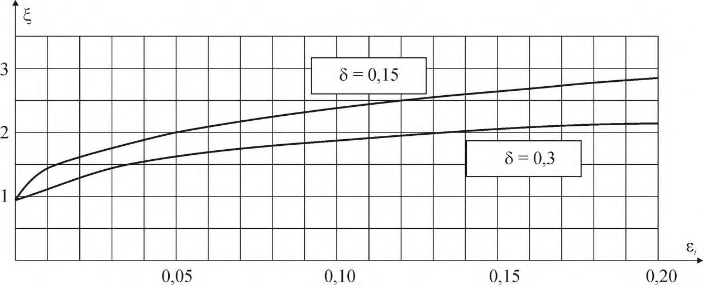
- в) для сооружений, у которых вторая собственная частота меньше предельной, необходимо производить динамический расчет с учетом s первых форм собственных колебаний. Число s следует определять из условия ƒs < ƒlim < ƒs+ 1 ;
- г) при расчете зданий допускается учитывать динамическую реакцию по трем низшим собственным формам колебаний (двум изгибных и одной крутильной или смешанным крутильно-изгибным).
Примечания
- 1 При расчете многоэтажных железобетонных зданий высотой до 40 м и одноэтажных железобетонных производственных зданий высотой до 36 м при отношении высоты к пролету менее 1,5, размещаемых в местностях типа А и В (см. 11.1.6), пульсационную составляющую ветровой нагрузки допускается определять по формуле (11.5).
- 2 Собственные частоты допускается определять при действии нормативных значений нагрузок (постоянных, длительных, кратковременных), учитываемых для рассматриваемой расчетной ситуации.
где X - суммарные усилия или перемещения;
- Xs - усилия или перемещения по s -й форме колебаний.
Таблица 11.5
| Ветровые районы (принимаются по карте 3 приложения Е) | f lim , Гц | f lim , Гц |
|---|---|---|
| Ветровые районы (принимаются по карте 3 приложения Е) | = 0,3 | = 0,15 |
| Iа | 0,85 | 2,6 |
| I | 0,95 | 2,9 |
| II | 1,1 | 3,4 |
| III | 1,2 | 3,8 |
| IV | 1,4 | 4,3 |
| V | 1,6 | 5,0 |
| VI | 1,7 | 5,6 |
| VII | 1,9 | 5,9 |
Значение логарифмического декремента колебаний следует принимать:
- а) для железобетонных и каменных сооружений, а также для зданий со стальным каркасом при наличии ограждающих конструкций = 0,3;
- б) для стальных сооружений, футерованных дымовых труб, аппаратов колонного типа, в том числе на железобетонных постаментах = 0,15.
Расчетная поверхность включает в себя те части наветренных и подветренных поверхностей, боковых стен, кровли и подобных конструкций, с которых давление ветра передается на рассчитываемый элемент сооружения.
Если расчетная поверхность близка к прямоугольнику, ориентированному так, что его стороны параллельны основным осям (рисунок 11.2), то коэффициент v следует определять по таблице 11.6 в зависимости от параметров и , принимаемых по таблице 11.7.
Рисунок 11.2 - Основная система координат при определении коэффициента корреляции v
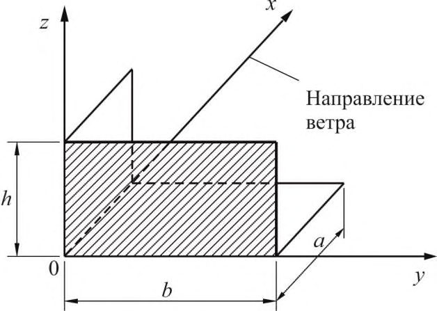
где
Таблица 11.6
| , м | Коэффициент v при , м, равном | Коэффициент v при , м, равном | Коэффициент v при , м, равном | Коэффициент v при , м, равном | Коэффициент v при , м, равном | Коэффициент v при , м, равном | Коэффициент v при , м, равном |
|---|---|---|---|---|---|---|---|
| 5 | 10 | 20 | 40 | 80 | 160 | 350 | |
| 0,1 | 0,95 | 0,92 | 0,88 | 0,83 | 0,76 | 0,67 | 0,56 |
| 5 | 0,89 | 0,87 | 0,84 | 0,80 | 0,73 | 0,65 | 0,54 |
| 10 | 0,85 | 0,84 | 0,81 | 0,77 | 0,71 | 0,64 | 0,53 |
| 20 | 0,80 | 0,78 | 0,76 | 0,73 | 0,68 | 0,61 | 0,51 |
| 40 | 0,72 | 0,72 | 0,70 | 0,67 | 0,63 | 0,57 | 0,48 |
| 80 | 0,63 | 0,63 | 0,61 | 0,59 | 0,56 | 0,51 | 0,44 |
| 160 | 0,53 | 0,53 | 0,52 | 0,50 | 0,47 | 0,44 | 0,38 |
При расчете сооружения в целом размеры расчетной поверхности следует определять с учетом указаний В.1 приложения В, при этом для решетчатых сооружений в качестве расчетной поверхности необходимо принимать размеры поверхности по его внешнему контуру.
Таблица 11.7
| Основная координатная плоскость, параллельно которой расположена расчетная поверхность | | |
|---|---|---|
| zoy | b | h |
| zox | 0,4 а | hп |
| xoy | b | а |
11.2Пиковая ветровая нагрузка
Для элементов ограждения и узлов их крепления необходимо учитывать пиковые положительные w + и отрицательные w - воздействия ветровой нагрузки, нормативные значения которых определяются по формуле
w 0 -нормативное значение давления ветра (см. 11.1.4); z e - эквивалентная высота (см. 11.1.5); k ( ze ) и ( ze ) - коэффициенты, учитывающие, соответственно, изменение давления и пульсаций давления ветра на высоте ze (см. 11.1.6 и 11.1.8); cp ,+(-) -пиковые значения аэродинамических коэффициентов положительного давления (+) или отсоса (-);
+(-) - коэффициенты корреляции ветровой нагрузки, соответствующие положительному давлению (+) и отсосу (-); значения этих коэффициентов приведены в таблице 11.8 в зависимости от площади ограждения А , с которой собирается ветровая нагрузка.
Таблица 11.8
| А , м² | <2 | 5 | 10 | >20 |
|---|---|---|---|---|
| + | 1,0 | 0,9 | 0,8 | 0,75 |
| - | 1,0 | 0,85 | 0,75 | 0,65 |
Аэродинамические коэффициенты ср ,+ и ср ,- определяются на основе результатов модельных испытаний сооружений в аэродинамических трубах или с учетом данных, опубликованных в технической литературе. Для отдельно стоящих прямоугольных в плане зданий значения этих коэффициентов приведены в В.1.17 приложения В.1.
СП 20.13330.2016
Примечание - При определении пиковой ветровой нагрузки, формула (11.10), принято, что конструктивные элементы ограждения и узлы их крепления к зданию являются достаточно жесткими, и в них не возникает заметных динамических усилий и перемещений. В случае если собственные частоты системы «элементы ограждения - их несущие конструкции - элементы их крепления» менее 1,5 Гц, расчетные значения пиковой ветровой нагрузки должны быть уточнены на основе результатов динамического расчета указанной системы конструктивных элементов.
11.3Резонансное вихревое возбуждение
где ƒi , Гц, - собственная частота колебаний по i -й изгибной собственной форме; d , м, - поперечный размер сооружения;
St - число Струхаля поперечного сечения, определяемое экспериментально или по справочным данным; для круглых поперечных сечений St = 0,2; для сечений с острыми кромками (в том числе и прямоугольных) St = 0,11.
Значение коэффициента kv , учитывающего эффект захвата собственной частоты колебаний, выбирается из диапазона 0,9 < kv < 1,1 из условия реализации наихудшего варианта нагружения.
где V max( z эк) - максимальная скорость ветра на уровне z эк, определяемая по формуле
где w 0 , Па, и k ( zе ) определяются в соответствии с 11.1.4 и 11.1.6.
Для зданий и башенных сооружений с плавно изменяющейся формой поперечного сечения, а также труб и мачт без оттяжек z эк = 0,8 h .
12Гололедные нагрузки
Нормативное значение поверхностной гололедной нагрузки i , Па, для остальных элементов конструкций следует определять по формуле
В (12.1) и (12.2):
- b - нормативное значение толщины стенки гололеда, мм (превышаемое в среднем один раз в 5 лет), на элементах кругового сечения диаметром 10 мм, расположенных на высоте 10 м над поверхностью земли, принимаемое по таблице 12.1, а на высоте 200 м и более - по таблице 12.2. Нормативное значение толщины стенки гололеда допускается уточнять в установленном порядке на основе метеорологических данных для места строительства (см. 4.4).
- k - коэффициент, учитывающий изменение толщины стенки гололеда по высоте и принимаемый при высоте до 100 м по таблице 12.3; при больших высотах - по интерполяции значений, приведенных в таблице 12.2 или по формуле: kh = e 0,007 h , где h - высота элемента над поверхностью земли.
- d , мм, - диаметр провода, троса;
- 1 - коэффициент, учитывающий изменение толщины стенки гололеда в зависимости от диаметра элементов кругового сечения и определяемый по таблице 12.4;
- 2 - коэффициент, учитывающий отношение площади поверхности элемента, подверженной обледенению, к полной площади поверхности элемента и принимаемый для объектов с малыми размерами поперечного сечения равным 0,6, для других объектов - по данным специально проведенных исследований;
- - плотность льда, принимаемая равной 0,9 г/см³ ;
- g , м/с 2 , - ускорение свободного падения.
Таблица 12.1
| Гололедные районы (принимаются по карте 3 приложения Е) | I | II | III | IV | V |
|---|---|---|---|---|---|
| Толщина стенки гололеда b , мм | Не менее 3 | 5 | 10 | 15 | Не менее 20 |
Таблица 12.2
| Высота над поверхностью земли, м | Толщина стенки гололеда b , мм, для разных районов | Толщина стенки гололеда b , мм, для разных районов | Толщина стенки гололеда b , мм, для разных районов | Толщина стенки гололеда b , мм, для разных районов |
|---|---|---|---|---|
| Высота над поверхностью земли, м | I района гололедности азиатской части | V района гололедности и горных местностей | северной части европей- ской территории | остальных |
| 200 | 15 | Принимается на основании специальных обследований | Принимается по карте 3, г приложения Е | 35 |
| 300 | 20 | То же | То же, по карте 3, д | 45 |
| 400 | 25 | » | » по карте 3, е | 60 |
Таблица 12.3
| Высота над поверхностью земли, м | 5 | 10 | 20 | 30 | 50 | 70 | 100 |
|---|---|---|---|---|---|---|---|
| Коэффициент k | 0,8 | 1,0 | 1,2 | 1,4 | 1,6 | 1,8 | 2,0 |
СП 20.13330.2016 Таблица 12.4
| Диаметр провода, троса или каната, мм | 5 | 10 | 20 | 30 | 50 | 70 |
|---|---|---|---|---|---|---|
| Коэффициент 1 | 1,1 | 1,0 | 0,9 | 0,8 | 0,7 | 0,6 |
Примечания (к таблицам 12.1- 12.4)
- 1 В V районе, горных и малоизученных районах, обозначенных на карте 3 приложения Е, а также в сильнопересеченных местностях (на вершинах гор и холмов, на перевалах, на высоких насыпях, в закрытых горных долинах, котловинах, глубоких выемках и т.п.) толщину стенки гололеда необходимо определять на основании данных специальных обследований и наблюдений.
2 Промежуточные значения величин следует определять линейной интерполяцией.
- 3 Толщину стенки гололеда на подвешенных горизонтальных элементах кругового сечения (тросах, проводах, канатах) допускается принимать на высоте расположения их приведенного центра тяжести.
Для определения гололедной нагрузки на горизонтальные элементы круговой цилиндрической формы диаметром до 70 мм толщину стенки гололеда, приведенную в таблице 12.2, следует снижать на 10 %.
Примечания
- 1 В отдельных районах, где наблюдаются сочетания значительных скоростей ветра с большими размерами гололедно-изморозевых отложений, толщину стенки гололеда и его плотность, а также давление ветра следует принимать в соответствии с фактическими данными.
- 2 При определении ветровых нагрузок на элементы сооружений, расположенных на высоте более 100 м над поверхностью земли, диаметр обледенелых проводов и тросов, установленный с учетом толщины стенки гололеда, приведенной в таблице 12.2, необходимо умножать на коэффициент 1,5.
Примечание - В районах, где при гололеде наблюдается температура ниже минус 15 С, ее следует принимать по фактическим данным.
13Температурные климатические воздействия
где tw , t c - нормативные значения средних температур по сечению элемента в теплое и холодное время года, принимаемые в соответствии с 13.3; t 0 w , t 0 c - начальные температуры в теплое и холодное время года, принимаемые в соответствии с 13.6.
Примечание - Для многослойных конструкций tw , t c , w , c определяются расчетом. Конструкции, изготовленные из нескольких материалов, близких по теплофизическим параметрам, допускается рассматривать как однослойные.
Таблица 13.1
| Здания и сооружения в стадии эксплуатации | Здания и сооружения в стадии эксплуатации | Здания и сооружения в стадии эксплуатации | |
|---|---|---|---|
| Конструкции зданий | неотапливаемые здания (без технологических ис- точников тепла) и открытые сооружения | отапливаемые здания | здания с искусственным климатом или с постоянны- ми технологическими ис- точниками тепла |
| Не защищенные от воз- действия солнечной ра- диации (в том числе наружные ограждающие) | t w = t ew + 1 + 4 | t w = t ew + 1 + 4 | t w = t iw + 0,6( t ew - t iw ) ± 2 + 4 |
| Не защищенные от воз- действия солнечной ра- диации (в том числе наружные ограждающие) | w = 5 | w = 5 | w = 0,8( t ew - t iw ) + 3 5 |
| Не защищенные от воз- действия солнечной ра- диации (в том числе наружные ограждающие) | t c = t ec - 0,5 1 | t c = t ic + 0,6( t ec - t ic ) - 0,5 2 | t c = t ic + 0,6( t ec - t ic ) - 0,5 2 |
| Не защищенные от воз- действия солнечной ра- диации (в том числе наружные ограждающие) | c = 0 | c = 0,8( t ec - t ic ) - 0,5 3 | c = 0,8( t ec - t ic ) - 0,5 3 |
| Защищенные от воздей- ствия солнечной радиа- ции (в том числе внут- ренние) | t w = t ew | t w = t ew | t w = t iw |
| Защищенные от воздей- ствия солнечной радиа- ции (в том числе внут- ренние) | w = 0 | w = 0 | w = 0 |
| Защищенные от воздей- ствия солнечной радиа- ции (в том числе внут- ренние) | t c = t ec | t c = t ic | t c = t ic |
| Защищенные от воздей- ствия солнечной радиа- ции (в том числе внут- ренние) | | | |
Обозначения, принятые в таблице 13.1: tew , tec - средние суточные температуры наружного воздуха в теплое и холодное время года соответственно, принимаемые в соответствии с 13.4; tiw , tic - температуры внутреннего воздуха помещений в теплое и холодное время года соответственно, принимаемые по заданию на проектирование с учетом технологических решений;
- 1, 2, 3 - приращения средних по сечению элемента температур и перепада температур от суточных колебаний температуры наружного воздуха, принимаемые по таблице 13.2;
4, 5 - приращения средних по сечению элемента температур и перепада температур от солнечной радиации, принимаемые в соответствии с 13.5.
Примечания
- 1 При наличии исходных данных о температуре конструкций в стадии эксплуатации зданий с постоянными технологическими источниками тепла значения tw , tc , w , c следует принимать на основе этих данных.
2 Для зданий и сооружений в стадии возведения tw , tc , w , c определяются как для неотапливаемых зданий в стадии их эксплуатации.
Таблица 13.2
| Приращения температуры , ° С | Приращения температуры , ° С | Приращения температуры , ° С | |
|---|---|---|---|
| Конструкции зданий | 1 | 2 | 3 |
| Металлические | 8 | 6 | 4 |
| Железобетонные, бетонные, армокаменные и каменные толщиной, см : | |||
| до 15 | 8 | 6 | 4 |
| от 15 до 39 | 6 | 4 | 6 |
| свыше 40 | 2 | 2 | 4 |
c
= 0
СП 20.13330.2016 где t min , t max - нормативные значения минимальной и максимальной температуры воздуха, соответственно, принимаемые по картам 4 и 5 приложения Е;
А I , А VII - средние суточные амплитуды температуры воздуха наиболее холодного и наиболее теплого месяца, соответственно, принимаемые по таблицам 3.1 и 4.1 СП 131.13330.
Нормативное значение минимальной и максимальной температуры воздуха допускается уточнять в установленном порядке на основе данных Росгидромета для места строительства (см. 4.4). В этом случае значения t min и t max следует вычислять по формулам t min = 0,9 t min,50, t max = 0,9 t max,50, где t min,50 и t max,50 - минимальная и максимальная температуры воздуха, абсолютные значения которых превышаются один раз в 50 лет.
Средние суточные температуры наружного воздуха в теплое tew и холодное t ec время года для подземной части сооружений следует определять по формулам:
где t min( h ) и t max( h ) - средняя минимальная и максимальная температура почвы на глубинах (по вытяжным термометрам), принимаемые согласно приложению Г в зависимости от глубины h заложения подземной части сооружения или по данным Росгидромета.
При расчетах подземной части сооружений следует принимать 1 = 2 = 3 = 4= 5 = 0.
При глубинах более 5 м суточные и сезонные изменения температуры почвы допускается не учитывать.
Примечания
- 1 При отсутствии данных для места строительства значения А I , А VII, t min (h) и t max (h) следует принимать по данным Росгидромета или по данным для ближайшего указанного в таблицах населенного пункта.
- 2 Промежуточные значения для глубины h определяются интерполяцией.
где - коэффициент поглощения солнечной радиации материалом наружной поверхности конструкции, принимаемый по таблице 13.3;
S max - максимальное значение суммарной (прямой, рассеянной и отраженной) солнечной радиации, Вт ч/м² , принимаемое для горизонтальных поверхностей по таблице 13.4, для вертикальных поверхностей различной ориентации - по таблице 13.5;
- коэффициент, принимаемый по таблице 13.6. k
СП 20.13330.2016 Таблица 13.3 Коэффициенты поглощения солнечной радиации материалом наружной поверхности ограждающей конструкции
| Материал наружной поверхности ограждающей конструкции | Материал наружной поверхности ограждающей конструкции | Коэффициент поглощения солнечной радиации |
|---|---|---|
| 1 | Алюминий | 0,5 |
| 2 | Асбоцементные листы | 0,65 |
| 3 | Асфальтобетон | 0,9 |
| 4 | Бетоны | 0,7 |
| 5 | Дерево неокрашенное | 0,6 |
| 6 | Защитный слой рулонной кровли из светлого гравия | 0,65 |
| 7 | Кирпич глиняный красный | 0,7 |
| 8 | Кирпич силикатный | 0,6 |
| 9 | Облицовка природным камнем белым | 0,45 |
| 10 | Окраска силикатная темно-серая | 0,7 |
| 11 | Окраска известковая белая | 0,3 |
| 12 | Плитка облицовочная керамическая | 0,8 |
| 13 | Плитка облицовочная стеклянная синяя | 0,6 |
| 14 | Плитка облицовочная белая или палевая | 0,45 |
| 15 | Рубероид с песчаной посыпкой | 0,9 |
| 16 | Сталь листовая, окрашенная белой краской | 0,45 |
| 17 | Сталь листовая, окрашенная темно-красной краской | 0,8 |
| 18 | Сталь листовая, окрашенная зеленой краской | 0,6 |
| 19 | Сталь кровельная оцинкованная | 0,65 |
| 20 | Стекло облицовочное | 0,7 |
| 21 | Штукатурка известковая темно-серая или тер- ракотовая | 0,7 |
| 22 | Штукатурка цементная светло-голубая | 0,3 |
| 23 | Штукатурка цементная темно-зеленая | 0,6 |
| 24 | Штукатурка цементная кремовая | 0,4 |
Таблица 13.4 Суммарная солнечная радиация (прямая и рассеянная) в июле месяце на горизонтальную поверхность при безоблачном небе, Вт ч/м² (максимальная часовая сумма)
| Географическая широта, град. с. ш. | Географическая широта, град. с. ш. | Географическая широта, град. с. ш. | Географическая широта, град. с. ш. | Географическая широта, град. с. ш. | Географическая широта, град. с. ш. | Географическая широта, град. с. ш. | Географическая широта, град. с. ш. |
|---|---|---|---|---|---|---|---|
| 38 | 40 | 42 | 44 | 46 | 48 | 50 | 52 |
| 987 | 968 | 950 | 931 | 913 | 895 | 876 | 858 |
| Географическая широта, град. с. ш. | Географическая широта, град. с. ш. | Географическая широта, град. с. ш. | Географическая широта, град. с. ш. | Географическая широта, град. с. ш. | Географическая широта, град. с. ш. | Географическая широта, град. с. ш. | Географическая широта, град. с. ш. |
| 54 | 56 | 58 | 60 | 62 | 64 | 66 | 68 |
| 839 | 821 | 803 | 784 | 766 | 748 | 729 | 711 |
СП 20.13330.2016
Таблица 13.5 Суммарная солнечная радиация (прямая, рассеянная и отраженная), поступающая в июле месяце на вертикальную поверхность при безоблачном небе, Вт∙ч/м² (максимальная часовая сумма)
| Географическая широта, град. с. ш. | Географическая широта, град. с. ш. | Географическая широта, град. с. ш. | Географическая широта, град. с. ш. | Географическая широта, град. с. ш. | Географическая широта, град. с. ш. | Географическая широта, град. с. ш. | Географическая широта, град. с. ш. | Географическая широта, град. с. ш. |
|---|---|---|---|---|---|---|---|---|
| 38 | 40 | 42 | 44 | 46 | 48 | 50 | 52 | |
| Южная ориентация | 389 | 415 | 440 | 465 | 490 | 515 | 540 | 566 |
| Восточная и западная ориентации | 731 | 737 | 742 | 748 | 754 | 760 | 765 | 771 |
| Северная ориентация | 209 | 209 | 205 | 203 | 204 | 206 | 211 | 219 |
| Географическая широта, град. с. ш. | Географическая широта, град. с. ш. | Географическая широта, град. с. ш. | Географическая широта, град. с. ш. | Географическая широта, град. с. ш. | Географическая широта, град. с. ш. | Географическая широта, град. с. ш. | Географическая широта, град. с. ш. | Географическая широта, град. с. ш. |
| 54 | 56 | 58 | 60 | 62 | 64 | 66 | 68 | |
| Южная ориентация | 591 | 616 | 641 | 666 | 691 | 717 | 742 | 767 |
| Восточная и западная ориентации | 777 | 783 | 789 | 794 | 800 | 806 | 812 | 817 |
| Северная ориентация | 228 | 240 | 254 | 270 | 288 | 309 | 331 | 356 |
Таблица 13.6
| Конструкции зданий | Коэффициент k |
|---|---|
| Металлические | 0,7 |
| Железобетонные, бетонные, армокаменные и каменные толщиной, см: до 15 | 0,6 |
| от 15 до 39 | 0,4 |
| свыше 40 | 0,3 |
где tI, tVII - многолетние средние месячные температуры воздуха в январе и июле, принимаемые для надземной части сооружений по таблице 5.1 СП 131.13330. Для подземной части сооружений t VII = t max( h ); t I = t min( h ).
Примечания
- 1 При наличии данных о календарном сроке замыкания конструкции, порядке производства работ и другое начальную температуру допускается уточнять в соответствии с этими данными.
- 2 При отсутствии данных для места строительства значения t I , t VII принимаются по данным Росгидромета или по данным для ближайшего указанного в таблице населенного пункта.
14Прочие нагрузки
Нагрузки и воздействия, не включенные в настоящий свод правил (специальные технологические нагрузки, вибрационные нагрузки от всех видов транспорта, влажностные и усадочные воздействия) устанавливаются в иных нормах проектирования строительных конструкций, задании на проектирование или в рекомендациях, разработанных в рамках научно-технического сопровождения.
15Прогибы и перемещения
Нормы настоящего раздела устанавливают предельные прогибы и перемещения несущих и ограждающих конструкций зданий и сооружений при расчете по второй группе предельных состояний независимо от применяемых строительных материалов.
Положения настоящего раздела не распространяются на сооружения гидротехнические, транспорта, атомных электростанций, а также опор воздушных линий электропередачи, открытых распределительных устройств и антенных сооружений связи.
15.1Общие указания
- где f - прогиб (выгиб) и перемещение элемента конструкции (или конструкции в целом), определяемые с учетом факторов, влияющих на их значения, в соответствии с приложением Д;
- fu - предельный прогиб (выгиб) или перемещение, устанавливаемые настоящими нормами.
Расчет необходимо производить исходя из следующих требований: а) технологических (обеспечение условий нормальной эксплуатации технологического и подъемно-транспортного оборудования, контрольно-измерительных приборов и т.д.); б) конструктивных (обеспечение целостности примыкающих друг к другу элементов конструкций и их стыков, обеспечение заданных уклонов); в) физиологических (предотвращение вредных воздействий и ощущений дискомфорта при колебаниях); г) эстетико-психологических (обеспечение благоприятных впечатлений от внешнего вида конструкций, предотвращение ощущения опасности).
Каждое из указанных требований должно быть выполнено при расчете независимо от других.
Ограничения колебаний конструкций следует устанавливать в соответствии с СН 2.2.4/2.1.8.566.
Примечание - Для всех типов покрытий целостность кровельного ковра следует обеспечивать конструктивными мероприятиями (например, использованием компенсаторов, созданием неразрезности элементов покрытия), а не повышением жесткости несущих элементов.
СП 20.13330.2016
15.2Предельные прогибы
15.2.1. Предельные прогибы элементов конструкций покрытий и перекрытий, ограничиваемые исходя из технологических, конструктивных и физиологических требований, следует отсчитывать от изогнутой оси, соответствующей состоянию элемента в момент приложения нагрузки, от которой вычисляется прогиб, а ограничиваемые исходя из эстетико-психологических требований - от прямой, соединяющей опоры этих элементов (см. также Д.1.7 приложения Д).
- 15.2.2. Расстояние (зазор) от верхней точки тележки мостового крана до нижней точки прогнутых несущих конструкций покрытий (или предметов, прикрепленных к ним) должно быть не менее 100 мм.
- 15.2.3. Предельные прогибы для различных расчетных ситуаций приведены в Д.2.2 приложения Д.
Для элементов конструкций зданий и сооружений, предельные прогибы и перемещения которых не оговорены настоящим и другими нормативными документами, вертикальные и горизонтальные прогибы и перемещения от постоянных, длительных и кратковременных нагрузок не должны превышать 1/150 пролета или 1/75 вылета консоли.
АПриложение А. А.1 Мостовые и подвесные краны
Таблица А.1 Мостовые и подвесные краны различных групп режимов работы (перечень)
| Краны | Группы режи- мов работы | Условия использования |
|---|---|---|
| Ручные всех видов | 1К-3К | Любые |
| С приводными подвесными талями, в том числе с навесными захватами | 1К-3К | Ремонтные и перегрузочные работы ограни- ченной интенсивности |
| С лебедочными грузовыми тележками, в том числе с навесными захватами | 1К-3К | Здания электростанций, монтажные работы, перегрузочные работы ограниченной интен- сивности |
| То же | 4К-6К | Перегрузочные работы средней интенсивно- сти, технологические работы в механических цехах, склады готовых изделий предприятий строительных материалов, склады метал- лосбыта |
| С грейферами двухканатного типа, магнит- но-грейферные | 4К-6К | Смешанные склады, работа с разнообразны- ми грузами |
| Магнитные | 4К-6К | Склады полуфабрикатов, работа с разнооб- разными грузами |
| Закалочные, ковочные, штыревые, литейные | 7К | Цехи металлургических предприятий |
| С грейферами двухканатного типа, магнит- но-грейферные | 7К | Склады насыпных грузов и металлолома с однородными грузами (при работе в одну или две смены) |
| С лебедочными грузовыми тележками, в том числе с навесными захватами | 7К | Технологические краны при круглосуточной работе |
| Траверсные, мульдогрейферные, мульдо- завалочные, для раздевания слитков, копро- вые, ваграночные, колодцевые | 8К | Цехи металлургических предприятий |
| Магнитные | 8К | Цехи и склады металлургических предприя- тий, крупные металлобазы с однородными грузами |
| С грейферами двухканатного типа, магнит- но-грейферные | 8К | Склады насыпных грузов и металлолома с однородными грузами (при круглосуточной работе) |
А.2Нагрузка от удара крана о тупиковой упор
Нормативное значение горизонтальной нагрузки F , кН, направленной вдоль кранового пути и вызываемой ударом крана о тупиковый упор, следует определять по формуле
где v - скорость передвижения крана в момент удара, принимаемая равной половине номинальной, м/с; f - возможная наибольшая осадка буфера, принимаемая равной 0,1 м для кранов с гибким подвесом груза грузоподъемностью не более 50 т групп режимов работы 1К-7К и 0,2 м - в остальных случаях; m - приведенная масса крана, определяемая по формуле
здесь mb - масса моста крана, т; т c - масса тележки, т; тq - грузоподъемность крана, т; k
- коэффициент; k = 0 - для кранов с гибким подвесом; k = 1 - для кранов с жестким подвесом груза; l l
- пролет крана, м;
1 - приближение тележки, м.
Расчетное значение рассматриваемой нагрузки с учетом коэффициента надежности по нагрузке f (см. 9.8) принимается не более предельных значений, приведенных в таблице А.2.
Таблица А.2
| Краны | Предельные значения нагрузок F , кН |
|---|---|
| Подвесные (ручные и электрические) и мостовые ручные | 10 |
| Электрические мостовые: | |
| общего назначения групп режимов работы 1К-3К | 50 |
| общего назначения и специальные групп режимов работы | 150 |
| Специальные группы режима работы 8К с подвесом груза: | |
| гибким | 250 |
| жестким | 500 |
Таблица Б.1
| Уклон покрытия , град. | |
|---|---|
| 30 ° | 1 |
| 60 ° | 0 |
б) Варианты 2 и 3 следует учитывать для зданий с двускатными покрытиями (профиль б ), при этом вариант 2 - при 15 ° 40 ° ; вариант 3 - при 10 ° 30 ° только при наличии ходовых мостиков или аэрационных устройств по коньку покрытия.
БПриложение Б. Схемы снеговых нагрузок и коэффициенты
Б.1Здания с односкатными и двускатными покрытиями
а) Для зданий с односкатными и двускатными покрытиями (рисунок Б.1) коэффициент определяется по таблице Б.1. Промежуточные значения определяются линейной интерполяцией.
Рисунок Б.1
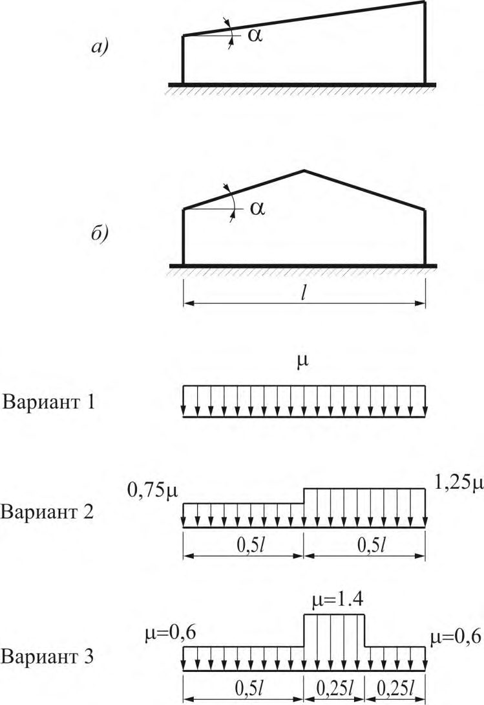
СП 20.13330.2016
Примечания
- 1 Для конструктивных схем покрытий, чувствительных к локальной неравномерности распределения снеговой нагрузки, необходимо рассмотреть дополнительную схему с коэффициентами μ=0,9 и μ=1,1 на двух скатах в поперечном направлении (см. вариант 2, рисунок Б.1) или в смежных пролетах покрытия по длине здания.
- 2 Для покрытий, имеющих габаритные размеры, превышающие 100 м в обоих направлениях, помимо равномерно распределенной снеговой нагрузки необходимо учитывать случай неравномерно распределенной снеговой нагрузки согласно вариантам 2 или 3 для двускатных покрытий или примечанию 1 для односкатных независимо от их уклона.
Б.2Здания со сводчатыми и близкими к ним по очертанию покрытиями Здания со сводчатыми и близкими к ним по очертанию покрытиями
Для зданий со сводчатыми и близкими к ним по очертанию покрытиями (рисунок Б.2) следует принимать
где - уклон покрытия, град; при этом значения 1 вычисляются в каждой точке покрытия; значения 2 - в точках с уклоном =30 , 60 и в крайнем сечении покрытия (точки А, В и С на рисунке Б.2). Промежуточные значения 2 определяются линейной интерполяцией. При ≥60 1=0 и 2=0.
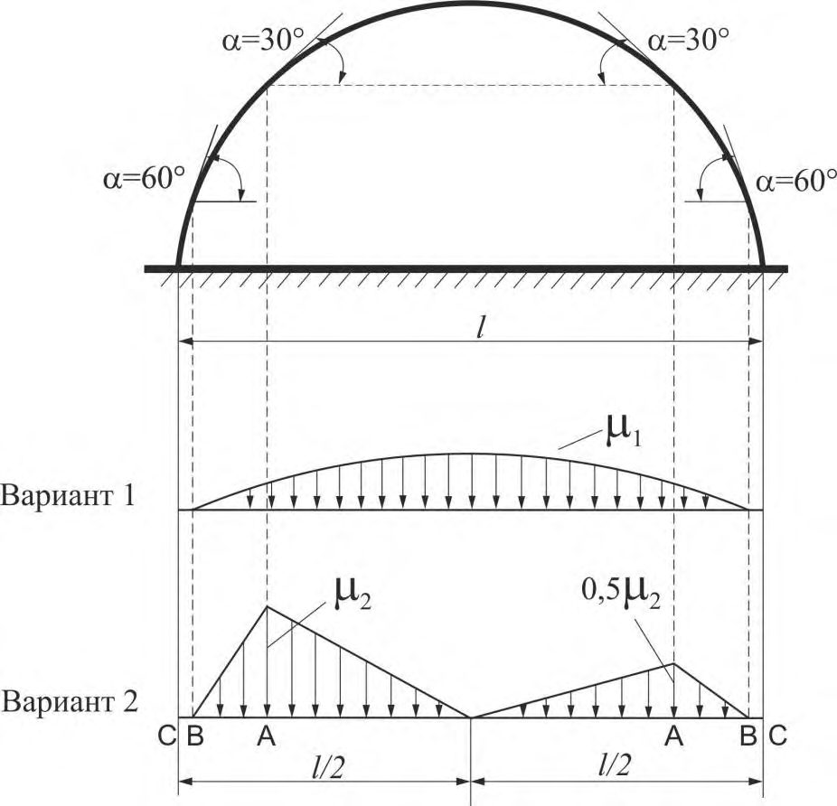
Покрытия в виде стрельчатых арок
Для покрытий в виде стрельчатых арок (рисунок Б.3) при 15 ° необходимо использовать схему Б.1 - рисунок Б.1, б , принимая l = l , при < 15 ° схему Б.2.1.
Б.3 Здания с продольными фонарями Здания с продольными фонарями, закрытыми сверху
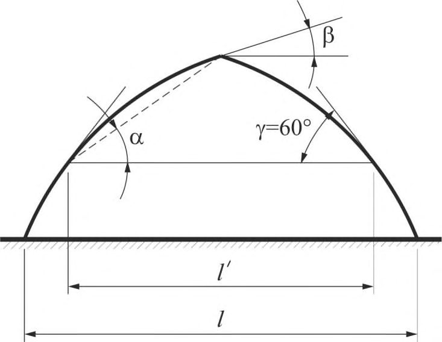
Для зданий с продольными фонарями, закрытыми сверху (рисунок Б.4), для двух схем снеговой нагрузки (рисунок Б.5) коэффициенты следует определять как:
но не более 4,0 и не более 2 hl / S 0; bl = hl , но не более b .
При определении нагрузки у торца фонаря для зоны B значение коэффициента в обоих вариантах следует принимать равным 1,0.
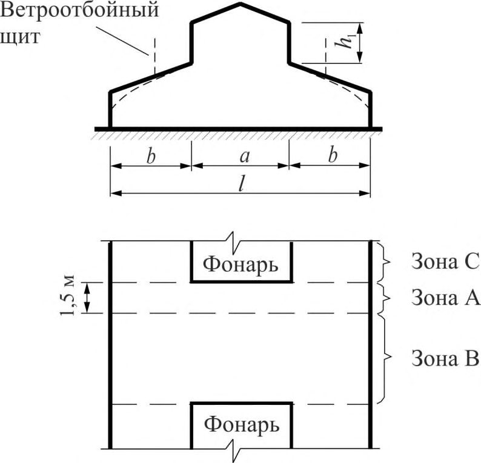
Примечания
- 1 Схемы вариантов 1, 2 (рисунок Б.5) следует также применять для двускатных и сводчатых покрытий двух- или многопролетных зданий с фонарями в середине зданий.
- 2 Влияние ветроотбойных щитов на распределение снеговой нагрузки возле фонарей не учитывать.
- 3 Для плоских скатов при b > 48 м следует учитывать местную повышенную нагрузку у фонаря, как у перепадов (см. рисунки Б.11, а , б ).
Рисунок Б.5
Здания с продольными фонарями, открытыми сверху
Для зданий с продольными фонарями, открытыми сверху (рисунок Б.6):
Значения b ( b 1, b 2) и m следует определять в соответствии с указаниями к схеме Б.8; пролет l принимается равным расстоянию между верхними кромками фонарей.
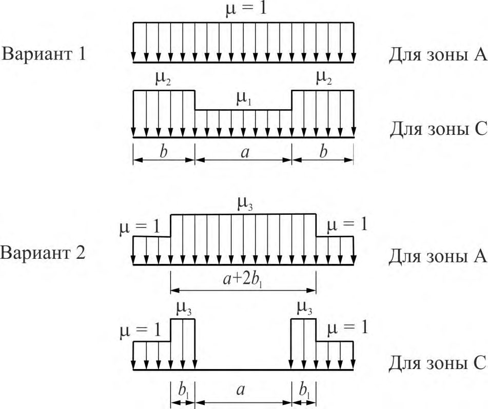
Б.4Шедовые покрытия
Схемы рисунка Б.7 следует применять для шедовых покрытий, в том числе с наклонным остеклением и сводчатым очертанием кровли.
Рисунок Б.7
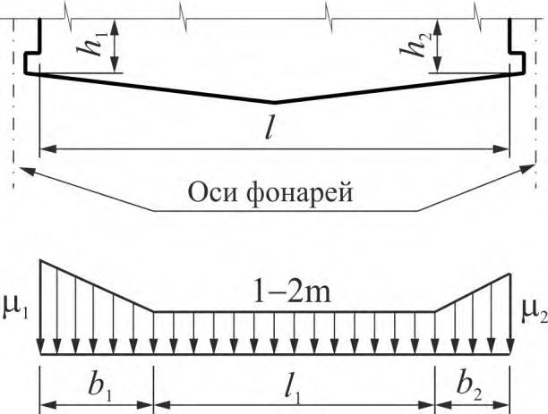
Б.5Двух- и многопролетные здания с двускатными покрытиями
Для двух- и многопролетных зданий с двускатными покрытиями (рисунок Б.8) вариант 2 следует учитывать при 15 ° . Для покрытий, имеющих габаритные размеры, превышающие 100 м в обоих направлениях, при < 15 ° необходимо учитывать случай неравномерно распределенной снеговой нагрузки с коэффициентами µ=0,9 и µ=1,1 в смежных пролетах.
Б.6 Двух- и многопролетные здания со сводчатыми и близкими к ним по очертанию покрытиями
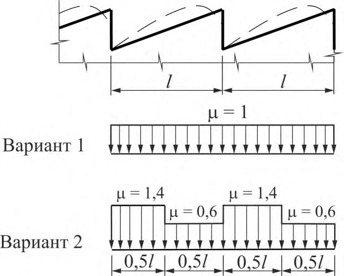
Для двух- и многопролетных зданий со сводчатыми и близкими к ним по очертанию покрытиями (рисунок Б.9) вариант 2 следует учитывать при 0,1 l f .
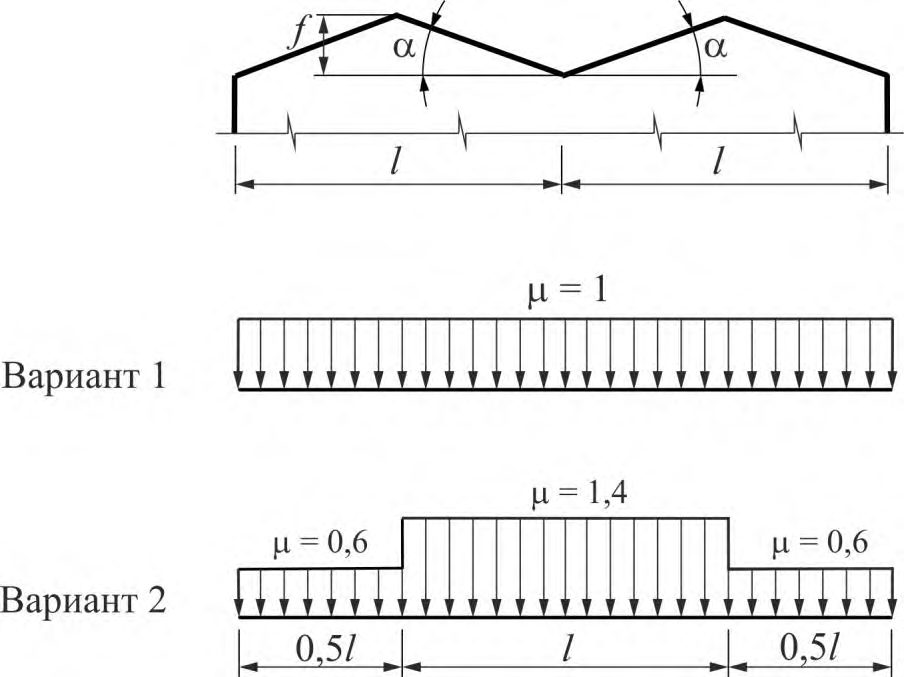
Б.7Двух- и многопролетные здания с двускатными и сводчатыми покрытиями с продольным фонарем
- a) Для пролетов с фонарем двух- и многопролетных зданий с двускатными и сводчатыми покрытиями (рисунок Б.10) коэффициент следует принимать в соответствии с вариантами 1 и 2 (рисунок Б.5), для пролетов без фонаря - с вариантами 1 и 2 (рисунки Б.8, Б.9). 2. б) Для плоских двускатных ( < 15 ° ) и сводчатых 0,1 l f покрытий при l > 48 м следует учитывать местную повышенную нагрузку, как у перепадов высоты (рисунок Б.11, а ).
- a) Для зданий с перепадом высоты снеговую нагрузку на верхнее покрытие следует принимать в соответствии со схемами Б.1-Б.7, а на нижнее - в двух вариантах: по схемам Б.1-Б.7 и схеме Б.8 (для зданий - профили а , б (рисунки Б.11, а , Б.11, б ), для навесов - профиль в (рисунок Б.11, в ).
Б.8 Здания с перепадом высоты
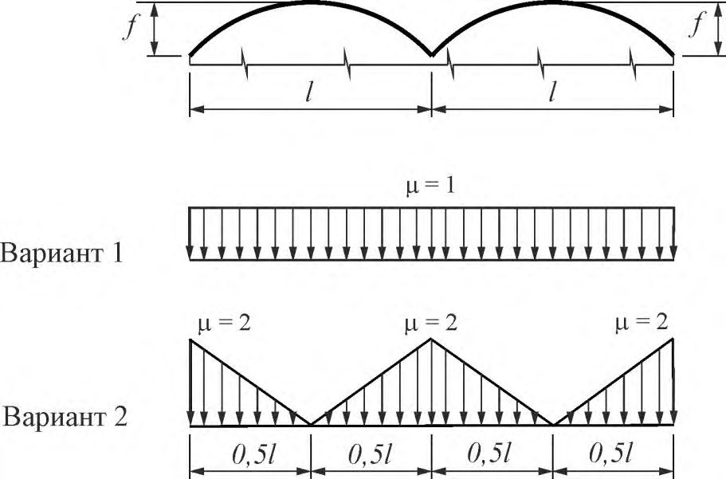
СП 20.13330.2016
Рисунок Б.11
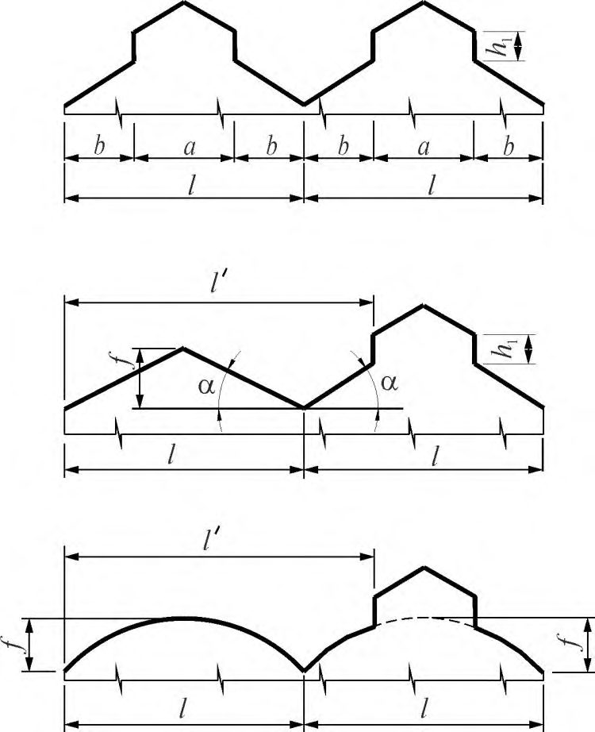
- б) Коэффициент следует принимать равным
где h - высота перепада, м, отсчитываемая от верха парапета или карниза верхнего покрытия до кровли нижнего. При h более 8 м при определении принимается h = 8 м;
1 l ; 2 l - длины участков верхнего ( 1 l ) и нижнего ( 2 l ) покрытия, с которых переносится снег в зону перепада высоты, м, их следует принимать: для покрытия без продольных фонарей или с поперечными фонарями
для покрытия с продольными фонарями или ступенчатыми перепадами высот
При этом 𝑙 1 ′ и 𝑙 2 ′ следует принимать не менее 0; т 1; m 2 - доли снега, переносимого ветром к перепаду высоты; их значения для верхнего т 1 и нижнего m 2 покрытий следует принимать в зависимости от их профиля:
- 0,4 - для плоского покрытия с 20 ° , сводчатого с f / l 1/8;
- 0,3 - для плоского покрытия с > 20 ° , сводчатого с f / l > 1/8 и покрытий с поперечными фонарями.
- в) Для пониженных покрытий шириной а < 21 м (см. рисунок Б.11, б ) значение т 2 следует принимать:
- т 2 = 0,5 k 1 k 2 k 3, но не менее 0,1, где 21 1 a k = , 35 β 1 k 2 -= (при обратном уклоне, пока- занном на чертеже пунктиром, k 2 = 1); 30 1 k 3 -= , но не менее 0,3 ( а - в м; , - в град).
- г) Длину зоны повышенных снегоотложений b следует принимать равной:
но не более 5 h и не более 16 м, где µ принимается из пункта б).
- д) Коэффициенты , принимаемые для расчетов (показанные на схемах для трех вариантов), не должны превышать:
- 4 - если нижнее покрытие является покрытием здания , а 48 м и 2 1 l l ;
- 6 - если нижнее покрытие является навесом или покрытием здания и 72 м или 2 1 l l . Промежуточные значения определяются интерполяцией для наибольшего значения из 2 1 или l l .
- е) Коэффициент 1 следует принимать:
СП 20.13330.2016
из пункта б);
- ж) При наличии между нижерасположенным покрытием и стенкой перепада высот разрыва шириной не более 1,5 м местную повышенную снеговую нагрузку на покрытие в зоне перепада следует определять так же, как для покрытий без разрыва. При этом для нижерасположенного покрытия принимается только приходящаяся на него часть трапециевидной эпюры коэффициента .
Примечания
- 1 При d 1 ( d 2) > 12 м значение для участка перепада длиной d 1 ( d 2) (рисунок Б.11, а ) следует определять без учета влияния фонарей на повышенном (пониженном) покрытии.
- 2 Если пролеты верхнего (нижнего) покрытия имеют различный профиль, то при определении необходимо принимать соответствующее значение m1 ( m2 ) для каждого пролета в пределах 1 l ( 2 l ).
- 3 Местную нагрузку у перепада не следует учитывать, если высота перепада, м, между двумя смежными покрытиями менее 2 0 S (где S 0 - в кПа).
- 4 При наличии возле перепада на верхнем покрытии сплошного парапета высотой h более 0,5 S 0, кПа и более 1 м допускается принимать m 1=0.
Б.9Здания с двумя перепадами высоты
Для зданий с двумя перепадами высоты снеговую нагрузку на верхние и нижние покрытия следует принимать по схеме, приведенной на рисунке Б.12. Значения 1, b 1, 2 , b 2 следует определять для каждого перепада независимо, принимая: т 1 и т 2 по схеме Б.9 (при определении нагрузок возле перепадов h1 и h2 ) соответствующими т 1 в схеме Б.8 и m 3 (доля снега, переносимого ветром по пониженному покрытию) соответствующим т 2 в схеме Б.8.
При наложении зон повышенных снегоотложений (см. вариант 2 на рисунке Б.12):
Если b 3 >b 1 и/или b 3 >b 2, то принимается огибающая полученных эпюр 1 и 2.
Б.10 Висячие покрытия цилиндрической формы
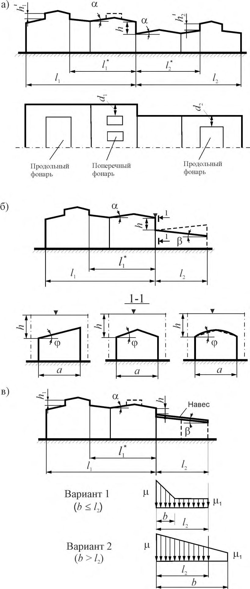
Для висячих покрытий цилиндрической формы (рисунок Б.13) следует принимать:
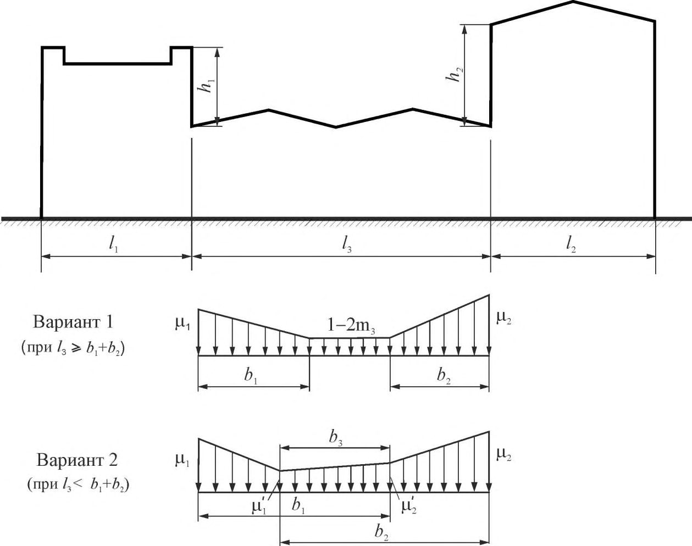
Б.11Здания с купольными круговыми и близкими к ним по очертанию покрытиями
Для зданий с купольными круговыми и близкими к ним по очертанию покрытиями (рисунок Б.14) коэффициент 1 определяется по таблице Б.2. Промежуточные значения определяются линейной интерполяцией.
Рисунок Б.14
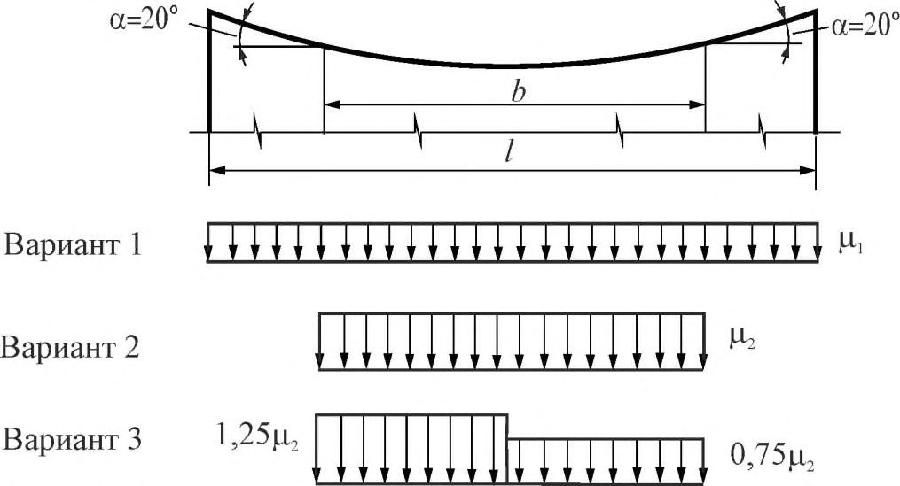
Таблица Б.2
| Уклон покрытия , град. | 1 |
|---|---|
| 30 ° | 1 |
| 60 ° | 0 |
Для пологих куполов с отношением f/d 0,05 следует учитывать только вариант 1.
Для куполов с отношением f/d > 0,05 следует учитывать варианты 1, 2 и 3 при уклонах < 60 ° .
Для варианта 2 на рисунке Б.14 следует принимать при z r 1
при z > r 1 3 = 1,5 sin , при = 45 ; 3 = 0, при > 60 .
Промежуточные значения определяются линейной интерполяцией.
Для варианта 3 следует принимать
Вариант 3 следует учитывать для куполов с f/d > 0,05 при сильно шероховатой поверхности покрытия, наличии на нем возвышающихся надстроек, фонарей или снегозадерживающих преград, а также для покрытий, защищенных от ветра соседними более высокими зданиями или объектами окружающей застройки.
Б.12Здания с коническими круговыми покрытиями
Для зданий с коническими круговыми покрытиями (рисунок Б.15) коэффициент 1 определяется по таблице Б.3. Промежуточные значения определяются линейной интерполяцией.
Таблица Б.3
| Уклон покрытия , град. | 1 |
|---|---|
| 30 ° | 1 |
| 60 ° | 0 |
Для пологих куполов при 7 следует учитывать только вариант 1.
Для менее пологих куполов при 7 < 30 для варианта 2 следует принимать
При 30 < < 60 для варианта 2 следует принимать:
где -в градусах.
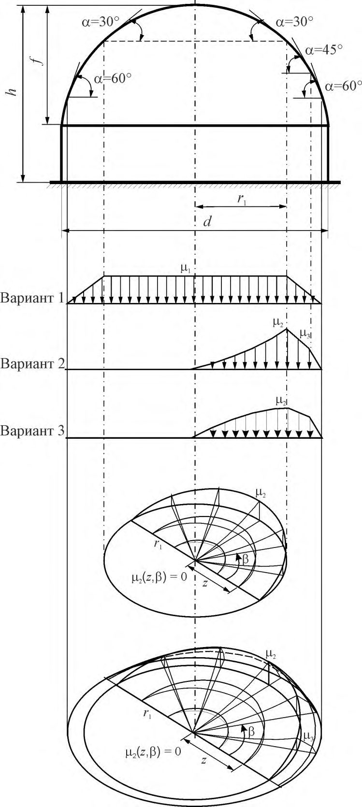
Б.13Покрытие с парапетами
- а) Снеговую нагрузку на покрытие возле парапетов следует принимать по схеме, приведенной на рисунке Б.16.
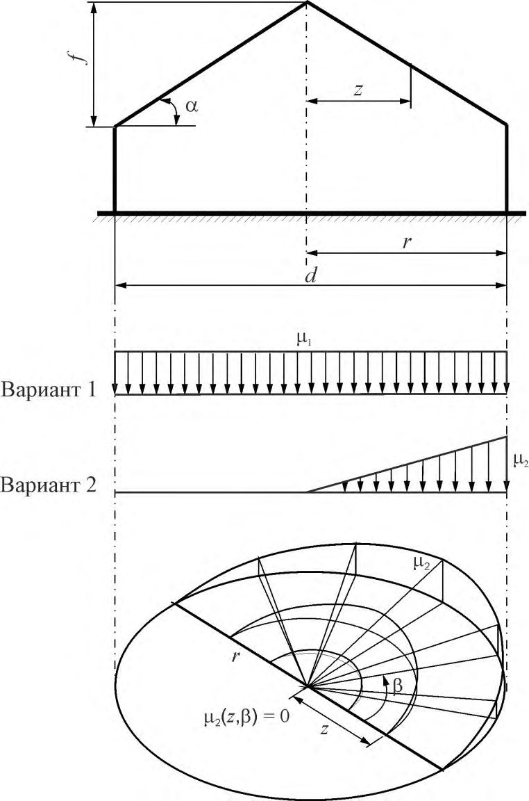
- б) Схему на рисунке Б.16 для покрытий с парапетами следует применять при 2 0 S h
но не менее 1,0 и не более: b 1 = 2 h , но не более 2 d.
Наличие зенитных фонарей и надстроек с диагональю не более 5 м, возвышающихся над кровлей не более чем на 0,4 м, допускается не учитывать.
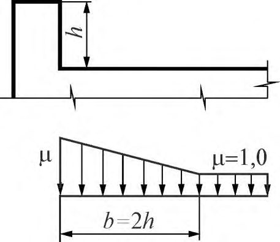
- в) Для плоских ( < 15 ) и сводчатых ( 0,1 f
- l ) покрытий при длине зоны переноса снега l > 48 м, а также при высоте парапета более 1,2 м следует учитывать местную повышенную нагрузку, как у перепадов высоты (см. на рисунке Б.11) в том случае, если эта схема более неблагоприятна, чем на рисунке Б.16.
Б.14Участки покрытий, примыкающие к возвышающимся над кровлей вентиляционным шахтам и другим надстройкам
- а) Схема на рисунке Б.17 относится к участкам с надстройками с диагональю основания не более 15 м.
- б) В зависимости от рассчитываемой конструкции (плит покрытия, подстропильных и стропильных конструкций) необходимо учитывать самое неблагоприятное положение зоны повышенной нагрузки (при произвольном угле ).
- в) Коэффициент для участков покрытий, примыкающих к возвышающимся над кровлей вентиляционным шахтам, зенитным фонарям и другим надстройкам (рисунок Б.14), постоянный в пределах указанной зоны, следует принимать равным:
ВПриложение В. Ветровые нагрузки
В.1Аэродинамические коэффициенты
В.1.1 Отдельно стоящие плоские сплошные конструкции
(стены, заборы и т.д.)
Для различных участков конструкций (рисунок В.1) коэффициент сх определяется по таблице В.1;
Таблица В.1
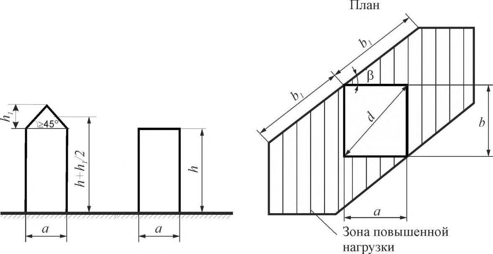
Рекламные щиты
| Участки плоских сплошных конструкций на земле (см. рисунок В.1) | Участки плоских сплошных конструкций на земле (см. рисунок В.1) | Участки плоских сплошных конструкций на земле (см. рисунок В.1) | Участки плоских сплошных конструкций на земле (см. рисунок В.1) |
|---|---|---|---|
| A | B | C | D |
| 2,1 | 1,8 | 1,4 | 1,2 |
Для рекламных щитов, поднятых над землей на высоту не менее d/ 4 (рисунок В.2): cx = 2,5 k , где kλ - определено в В.1.15.
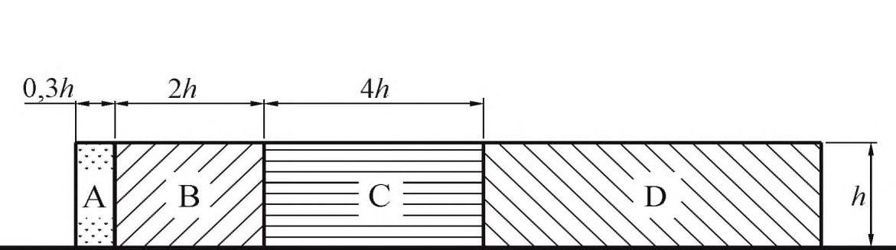
Равнодействующую нагрузку, направленную по нормали к плоскости щита, следует прикладывать на высоте его геометрического центра с эксцентриситетом в горизонтальном направлении e = 0,25 b .
В.1.2 Прямоугольные в плане здания с двускатными покрытиями
Вертикальные стены прямоугольных в плане зданий
Таблица В.2
| Боковые стены Участки | Боковые стены Участки | Боковые стены Участки | Наветренная стена | Подветренная стена |
|---|---|---|---|---|
| A | B | C | D | E |
| -1,0 | -0,8 | -0,5 | 0,8 | -0,5 |
Для наветренных, подветренных и различных участков боковых стен (рисунок В.3) аэродинамические коэффициенты се приведены в таблице В.2.
Для боковых стен с выступающими лоджиями аэродинамический коэффициент трения сf = 0,1.
Рисунок В.3
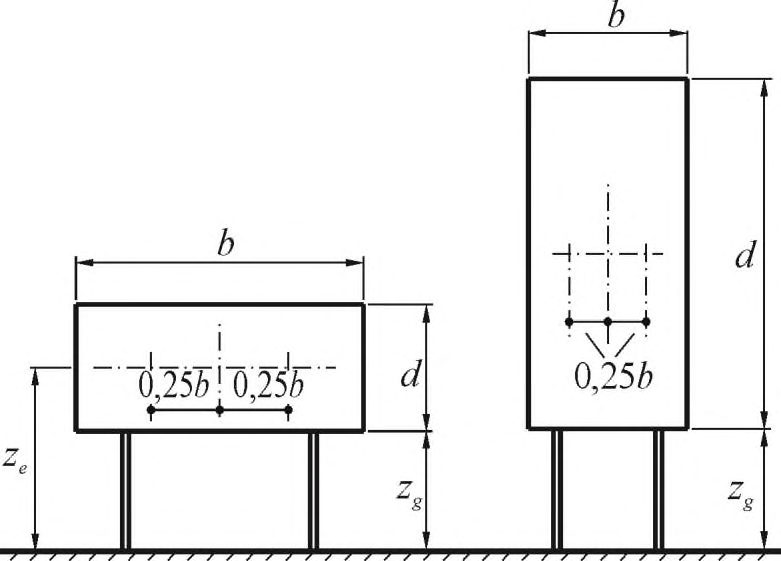
Двускатные покрытия
Для различных участков покрытия (рисунок В.4) коэффициент се определяется по таблице В.3, а и В.3, б в зависимости от направления средней скорости ветра.
Для углов 15° ≤ β ≤30° при α = 0° необходимо рассмотреть два варианта распределения расчетной ветровой нагрузки.
Для протяженных гладких покрытий при α = 90° (рисунок В.4, б ) аэродинамические коэффициенты трения сf = 0,02.
Рисунок В.4
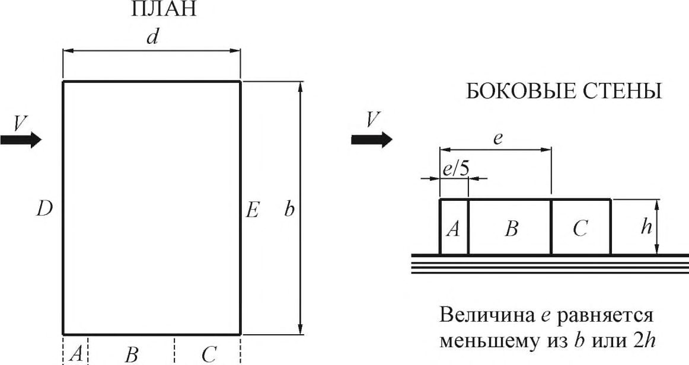
Таблица В.3а
| α = 0° | α = 0° | α = 0° | α = 0° | α = 0° | α = 0° |
|---|---|---|---|---|---|
| Уклон β | F | G | H | I | J |
| 0° | -1,8 | -1,3 | -0,7 | -0,5 | -0,5 |
| 15° | -0,9 | -0,8 | -0,3 | -0,4 | -1,0 |
| 15° | 0,2 | 0,2 | 0,2 | -0,4 | -1,0 |
| 30° | -0,5 | -0,5 | -0,2 | -0,4 | -0,5 |
| 30° | 0,7 | 0,7 | 0,4 | -0,4 | -0,5 |
| 45° | 0,7 | 0,7 | 0,6 | -0,2 | -0,3 |
| 60° | 0,7 | 0,7 | 0,7 | -0,2 | -0,3 |
| 75° | 0,8 | 0,8 | 0,8 | -0,2 | -0,3 |
Таблица В.3б
| Уклон β | F | G | H | I |
|---|---|---|---|---|
| 0° | -1,8 | -1,3 | -0,7 | -0,5 |
| 15° | -1,3 | -1,3 | -0,6 | -0,5 |
| 30° | -1,1 | -1,4 | -0,8 | -0,5 |
| 45° | -1,1 | -1,4 | -0,9 | -0,5 |
| 60° | -1,1 | -1,2 | -0,8 | -0,5 |
| 75° | -1,1 | -1,2 | -0,8 | -0,5 |
В.1.3 Прямоугольные в плане здания со сводчатыми и близкими к ним по очертанию покрытиями
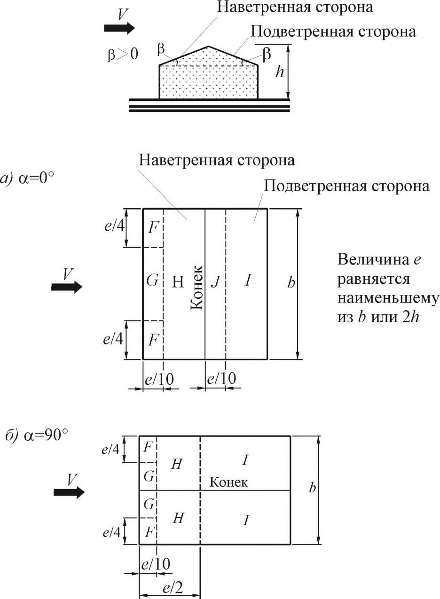
Примечание - При 0,2 ≤ f/d ≤ 0,3 и h1/d 0,5 необходимо учитывать два значения коэффициента сe 1 .
Рисунок В.5
Распределение аэродинамических коэффициентов ce по поверхности покрытия приведено на рисунке В.5.
Аэродинамические коэффициенты ce для стен принимаются в соответствии с таблицей В.2.
СП 20.13330.2016
При определении эквивалентной высоты ze , см. 11.1.5 и коэффициента в соответствии с 11.1.11: h = h 1 + 0,7 f .
В.1.4 Круглые в плане здания с купольными покрытиями
Значения коэффициентов се в точках А и С , а также в сечении ВВ приведены на рисунке В.6. Для промежуточных сечений коэффициенты се определяются линейной интерполяцией.
При определении эквивалентной высоты ze , см.11.1.5 и коэффициента в соответствии с 11.1.11: h = h 1 + 0,7 f .
Рисунок В.6
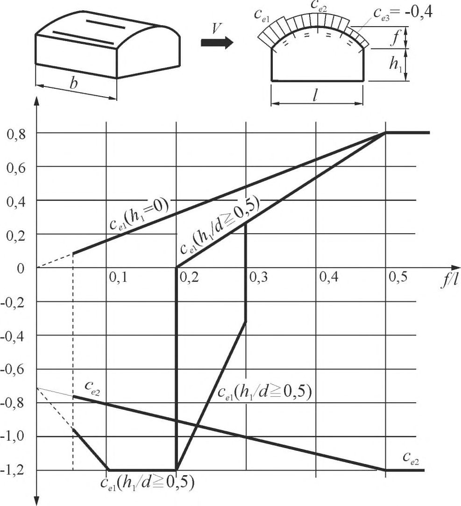
В.1.5 Здания с продольными фонарями
Рисунок В.7
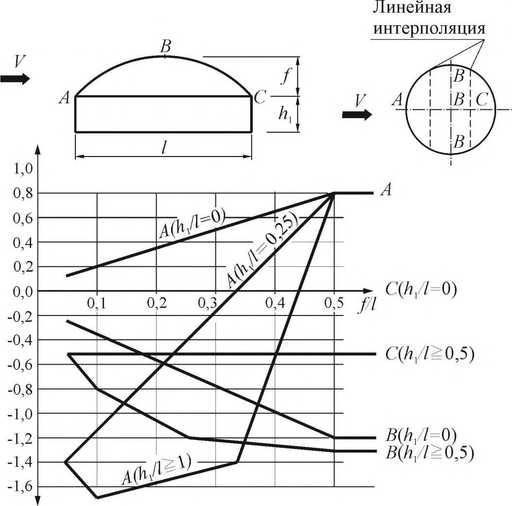
Для участков А и В (рисунок В.7) коэффициенты се следует определять в соответствии с таблицами В.3, а и В.3, б .
Для фонарей участка С при 2 сх = 0,2; при 2 8 для каждого фонаря сх = 0,1 ; при 8 сх = 0,8, здесь = a / hф .
Для остальных участков покрытия се = - 0,5.
Для вертикальных поверхностей и стен зданий коэффициенты сe следует определять в соответствии с таблицей В.2.
При определении эквивалентной высоты ze , см.11.1.5 и коэффициента в соответствии с 11.1.11: h = h 1.
В.1.6 Здания с зенитными фонарями
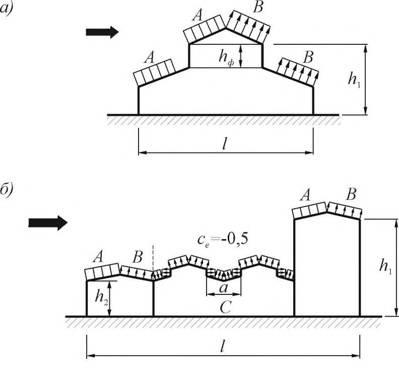
СП 20.13330.2016
Для наветренного фонаря коэффициент се следует определять в соответствии с таблицами В.3, а и В.3, б .
Для остальных фонарей коэффициенты сx определяются так же, как и для участка С (раздел В.1.5).
Для остальной части покрытия се = - 0,5.
Для вертикальных поверхностей и стен зданий коэффициенты сe следует определять в соответствии с таблицей В.2.
При определении эквивалентной высоты ze , см. 11.1.5 и коэффициента в соответствии с 11.1.11 h = h 1.
В.1.7 Здания с шедовыми покрытиями
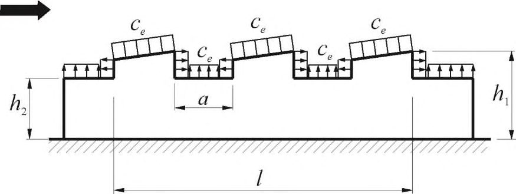
Для участка А коэффициент се следует определять в соответствии с таблицами В.3, а и В.3, б . Для остальной части покрытия се = - 0,5.
Для вертикальных поверхностей и стен зданий коэффициенты сe следует определять в соответствии с таблицей В.2.
При определении эквивалентной высоты ze (11.1.5) и коэффициента (11.1.11) h = h 1 .
Для шедовых покрытий аэродинамический коэффициент трения сf = 0,04.
В.1.8 Здания с уступами
Рисунок В.10
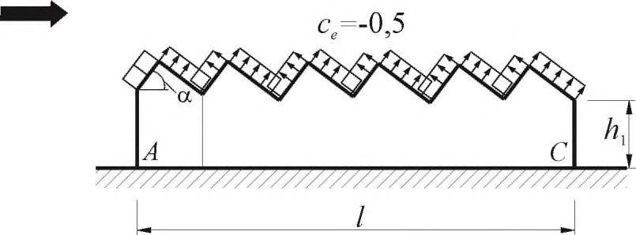
Для участка M коэффициент ce = 0,8.
Для участка K коэффициенты се следует принимать в соответствии с таблицей В.2.
Для участка L коэффициент ce следует определять линейной интерполяцией.
Для остальных вертикальных поверхностей коэффициент ce необходимо определять в соответствии с таблицей В.2.
Для покрытия зданий коэффициенты се определяются в соответствии с таблицами В.3, а и В.3, б .
В.1.9 Здания с открывающими и постоянно открытыми проемами
Рисунок В.11
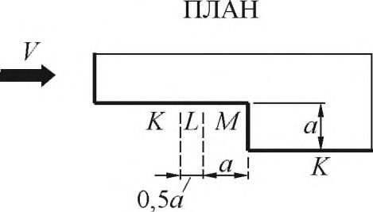
При проницаемости ограждения 5 % сi 1 = сi 2 = 0,2. Для каждой стены здания знак «плюс» или «минус» следует выбирать из условия реализации наиболее неблагоприятного варианта нагружения.
Аэродинамические коэффициенты для внешней поверхности следует принимать в соответствии с В.1.2 - В.1.7.
Примечание - Проницаемость ограждения следует определять как отношение суммарной площади имеющихся в нем проемов к полной площади ограждения.
В.1.10 Навесы
Аэродинамические коэффициенты сp для четырех типов навесов (рисунок В.12) без сплошностенчатых вертикальных ограждающих конструкций определяются по таблице В.4.
Рисунок В.12
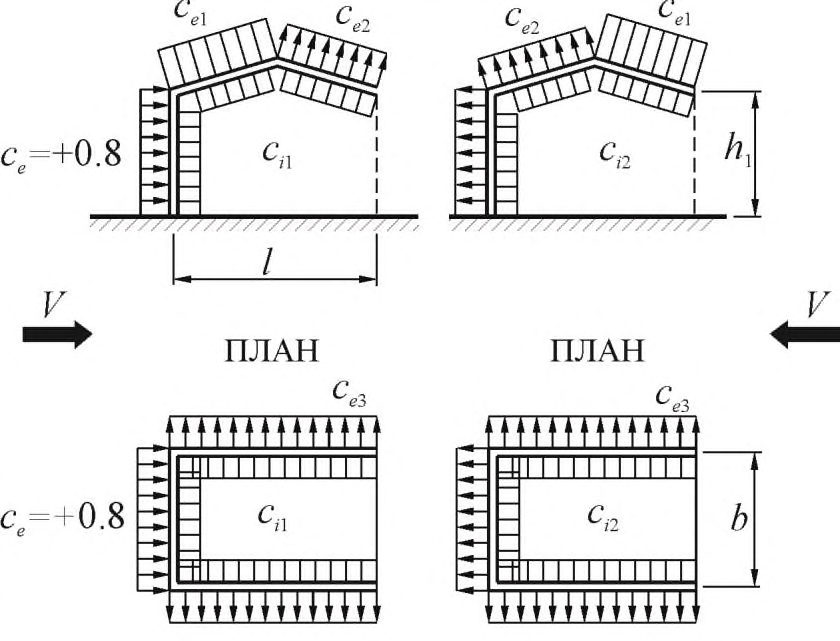
Таблица В.4
| Тип схе- мы | , град | Значения коэффициентов | Значения коэффициентов | Значения коэффициентов | Значения коэффициентов |
|---|---|---|---|---|---|
| Тип схе- мы | , град | с p 1 | с p 2 | с p 3 | с p 4 |
| 10 | 0,5 | -1,3 | -1,1 | 0 | |
| 20 | 1,1 | 0 | 0 | -0,4 | |
| 30 | 2,1 | 0,9 | 0,6 | 0 | |
| 10 | 0 | -1,1 | -1,5 | 0 | |
| 20 | 1,5 | 0,5 | 0 | 0 | |
| 30 | 2 | 0,8 | 0,4 | 0,4 | |
| 10 | 1,4 | 0,4 | - | - | |
| 20 | 1,8 | 0,5 | - | - | |
| 30 | 2,2 | 0,6 | - | - | |
| 10 | 1,3 | 0,2 | - | - | |
| 20 | 1,4 | 0,3 | - | - | |
| 30 | 1,6 | 0,4 | - | - |
Примечания
- 1 Коэффициенты сp 1, сp 2, сp 3, сp 4 соответствуют суммарному давлению на верхнюю и нижнюю поверхности навесов.
- 2 Для отрицательных значений сp 1, сp 2, сp 3, сp 4 направление давления на схемах следует изменять на противоположное.
- 3 Для навесов с волнистыми покрытиями аэродинамический коэффициент трения сf = 0,04.
- 4 Для горизонтально расположенных навесов необходимо рассмотреть два варианта нагружения, соответствующих схемам III и IV при = 10 .
В.1.11 Сфера
Рисунок В.13
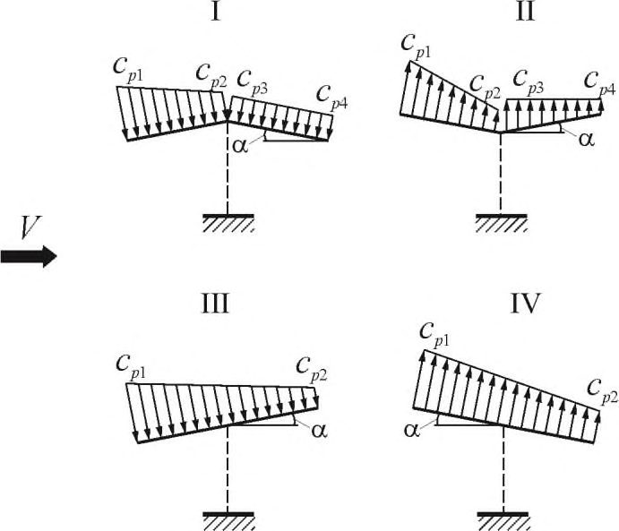
Аэродинамические коэффициенты лобового сопротивления сх сферы при zg > d/2 (рисунок В.13) приведены на рисунке В.14 в зависимости от числа Рейнольдса Re и относительной шероховатости = / d , где , м, - шероховатость поверхности (см. В.1.16). При zg < d/ 2 коэффициент cx следует увеличить в 1,6 раза.
Коэффициент подъемной силы сферы cz принимается равным:
Эквивалентная высота, см. 11.1.5 ze = zg + d/
При определении коэффициента в соответствии с 11.1.11 следует принимать
Число Рейнольдса Re определяется по формуле
где d , м, - диаметр сферы; w0 , Па, - определяется в соответствии с 11.1.4; z e , м, - эквивалентная высота; k ( ze ) -определяется в соответствии с 11.1.6;
f - коэффициент надежности по нагрузке, см. 11.1.12.
В.1.12 Сооружения и конструктивные элементы с круговой цилиндрической поверхностью
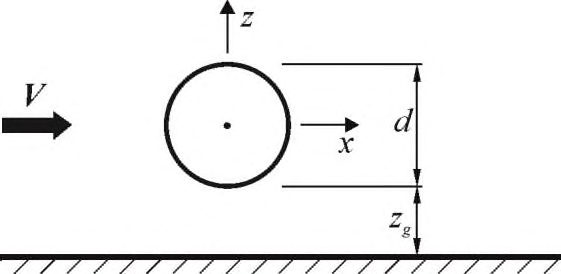
Аэродинамический коэффициент се 1 внешнего давления определяется по формуле
где k λ 1 = 1 при c 0 ; для c < 0 -kλ1 = kλ , определено в В.1.15.
Распределение коэффициентов c по поверхности цилиндра при = /d < 5 . 10 -4 (см. В.1.16) приведены на рисунке В.16 для различных чисел Рейнольдса Re . Значение указанных на этом рисунке углов βmin и β b , а также соответствующее им значение коэффициентов с min и сb приведены в таблице В.5.
Значения аэродинамических коэффициентов давления сe 2 и ci (рисунок В.15) приведены в таблице В.6. Коэффициент сi следует учитывать для опущенного покрытия («плавающая кровля»), а также при отсутствии покрытия.
Аэродинамические коэффициенты лобового сопротивления сx определяются по формуле
где kλ - определено в В.1 в зависимости от относительного удлинения сооружения (см. В.1.15). Значения коэффициентов сх∞ приведены на рисунке В.17 в зависимости от числа Рейнольдса Re и относительной шероховатости = / d (см. В.1.16); для цилиндрических сооружений с ребрами - высота ребра.
СП 20.13330.2016
Рисунок В.16
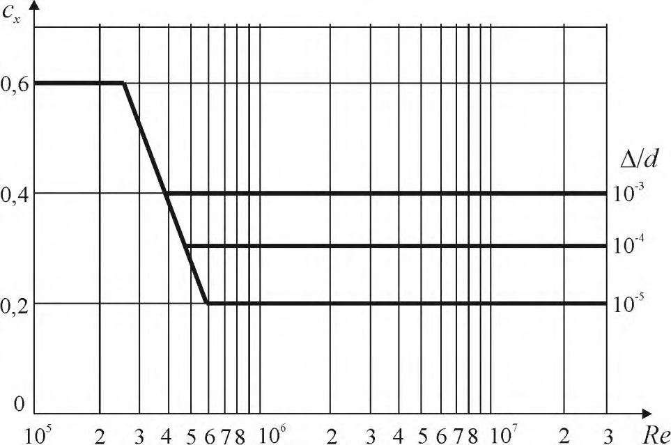
Таблица В.5
| Re | β min | c min | β b | c b |
|---|---|---|---|---|
| 5·10 5 | 85 | -2,2 | 135 | -0,4 |
| 2·10 6 | 80 | -1,9 | 120 | -0,7 |
| 10 7 | 75 | -1,5 | 105 | -0,8 |
Таблица В.6
| h/d | 1/6 | 1/4 | 1/2 | 1 | 2 | 5 |
|---|---|---|---|---|---|---|
| с e 2, c i | -0,5 | -0,55 | -0,7 | -0,8 | -0,9 | -1,05 |
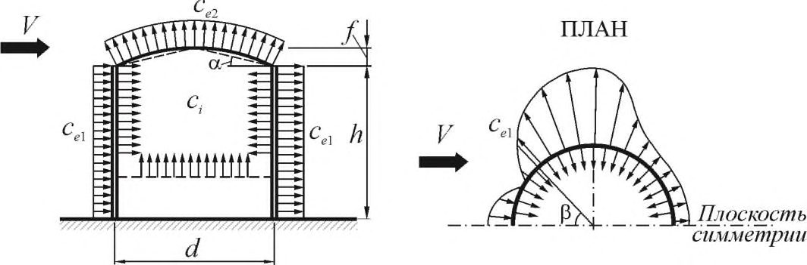
Для проводов и тросов (в том числе покрытых гололедом) сх = 1,2.
Аэродинамические коэффициенты лобового сопротивления наклонных элементов (рисунок В.18) определяются по формуле
где сх - определяется в соответствии с данными В.1.12, В.1.13 и В.1.14; β - угол между осью элемента и скоростью ветра V , направленной вдоль оси x .
Рисунок В.18
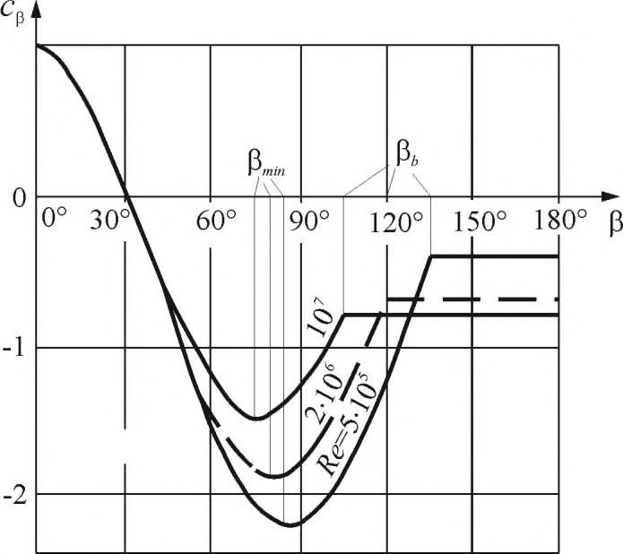
При определении коэффициента в соответствии с 11.1.11:
Число Рейнольдса Re определяется по формуле, приведенной в В.1.11, где ze = 0,8 h для вертикально расположенных сооружений;
- z e равно расстоянию от поверхности земли до оси горизонтально расположенного сооружения.
СП 20.13330.2016
В.1.13 Призматические сооружения и конструктивные элементы
Аэродинамические коэффициенты лобового сопротивления призматических сооружений определяются по формуле
где kλ определено в В.1.15 в зависимости от относительного удлинения сооружения λ e .
Значения коэффициента х c для прямоугольных сечений приведены на рисунке В.19, а для n -угольных сечений и конструктивных элементов (профилей) - в таблице В.7.
Аэродинамические коэффициенты лобового сопротивления для конструкционных профилей принимаются равными 1,4 ( cx = 1,4) .
Таблица В.7
| Эскизы сечений и направлений ветра | , град. | n (число сто- рон) | х c при Re 4 . 10 5 |
|---|---|---|---|
| Правильный многоугольник | Произволь- ный | 5 | 1,8 1,5 |
| Правильный многоугольник | Произволь- ный | 6-8 | |
| Правильный многоугольник | Произволь- ный | 10 | 1,2 |
| Правильный многоугольник | Произволь- ный | 12 | 1,0 |
В.1.14 Решетчатые конструкции
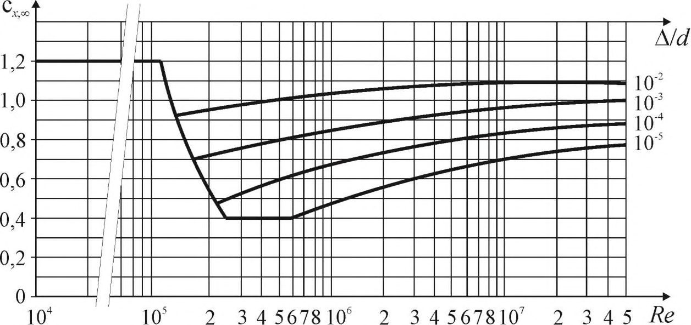
Аэродинамические коэффициенты решетчатых конструкций отнесены к площади граней пространственных ферм или площади контура плоских ферм.
Направление оси х для плоских ферм совпадает с направлением ветра и перпендикулярно плоскости конструкции; для пространственных ферм расчетные направления ветра показаны в таблице В.8.
Аэродинамические коэффициенты сх отдельно стоящих плоских решетчатых конструкций определяются по формуле
где cxi - аэродинамический коэффициент i-го элемента конструкции, принимаемый равным 1,4 ( cxi = 1,4) для профилей и определяемый в соответствии с указаниями В.1.12 и В.1.13 для элементов с круглым и прямоугольным поперечными сечениями, соответственно; при этом k λ =1;
А i - площадь проекции i -го элемента конструкции;
А k - площадь, ограниченная контуром конструкции.
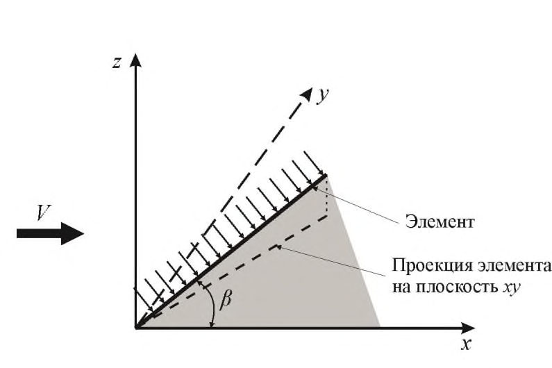
Ряд плоских параллельно расположенных решетчатых конструкций
Рисунок В.21
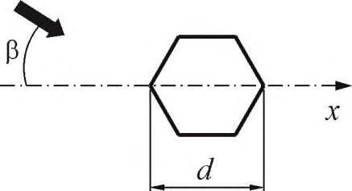
Для наветренной конструкции коэффициент сх 1 определяется так же, как и для отдельно стоящей фермы;
Для второй и последующих конструкций сх 2 = сх 1 .
Для ферм из профилей из труб при Re < 4 . 10 5 коэффициент η определяется по таблице В.8 в зависимости от относительного расстояния между фермами b/h (рисунок В.19)
Таблица В.8
| b/h | b/h | b/h | b/h | b/h | |
|---|---|---|---|---|---|
| | 1/2 | 1 | 2 | 4 | 6 |
| 0,1 | 0,93 | 0,99 | 1 | 1 | 1 |
| 0,2 | 0,75 | 0,81 | 0,87 | 0,9 | 0,93 |
| 0,3 | 0,56 | 0,65 | 0,73 | 0,78 | 0,83 |
| 0,4 | 0,38 | 0,48 | 0,59 | 0,65 | 0,72 |
| 0,5 | 0,19 | 0,32 | 0,44 | 0,52 | 0,61 |
| 0,6 | 0 | 0,15 | 0,3 | 0,4 | 0,5 |
Для ферм из труб при Re 4 . 10 5 = 0,95.
Примечание - Число Рейнольдса Re следует определять по формуле в В.1.11, где d - средний диаметр трубчатых элементов.
Рисунок В.22
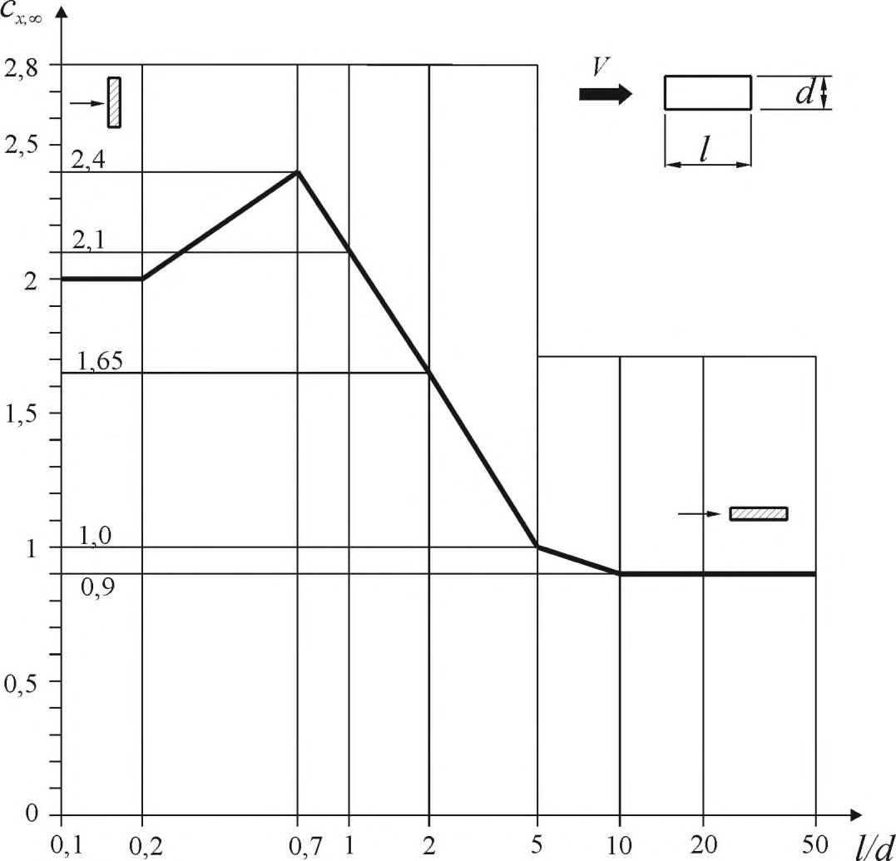
Аэродинамические коэффициенты сt решетчатых башен и пространственных ферм определяются по формуле
где cх - определяется так же, как и для отдельно стоящей фермы;
- определяется так же, как и для ряда плоских ферм.
Значения коэффициента k 1 приведены в таблице В.9.
Таблица В.9
В.1.15 Учет относительного удлинения
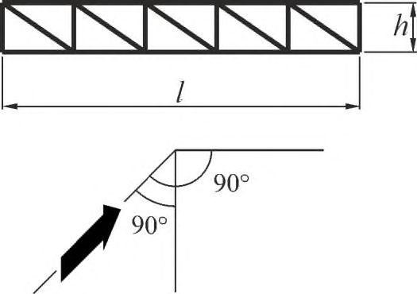
Значения коэффициента k λ в зависимости от относительного удлинения λ е элемента или сооружения приведены на рисунке В.23. Относительное удлинение λ е зависит от параметра λ = l/b и определяется по таблице В.10; степень заполнения = i k A А 1 .
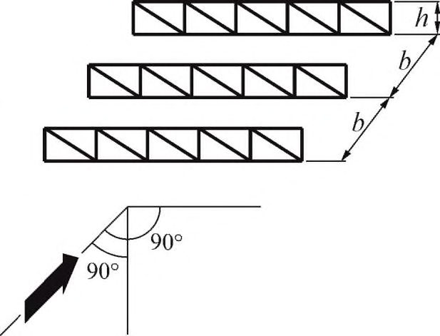
Рисунок В.23
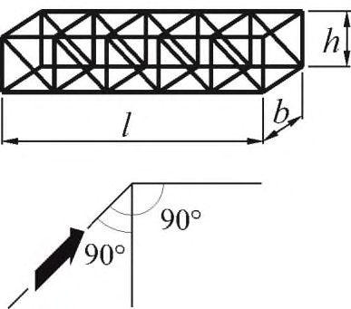
В.1.16 Учет шероховатости внешней поверхности
Шероховатость поверхностей конструкций, в зависимости от их обработки и материала, из которого они изготовлены, приведены в таблице В.11.
Таблица В.11
| Тип поверхности | Шероховатость , мм | Тип поверхности | Шероховатость , мм |
|---|---|---|---|
| Стекло | 0,0015 | Оцинкованная сталь | 0,2 |
| Полированный ме- талл | 0,002 | Шлифованный бетон | 0,2 |
| Тонкомолотая мас- ляная краска | 0,006 | Шероховатый бетон | 1,0 |
| Распыленная краска | 0,02 | Ржавчина | 2,0 |
| Литейный чугун | 0,2 | Каменная, кир- пичная кладка | 3,0 |
В.1.17 Пиковые значения аэродинамических коэффициентов для прямоугольных в плане зданий
- а) Для стен прямоугольных в плане зданий пиковое положительное значение аэродинамического коэффициента сp , + = 1,2.
- б) Пиковые значения отрицательного аэродинамического коэффициента сp , -для стен и плоских покрытий (рисунок В.24) приведены в таблице В.12.
Таблица В.12
| Участок | A | B | C | D | E |
|---|---|---|---|---|---|
| c p ,- | -2,2 | -1,2 | -3,4 | -2,4 | -1,5 |
Рисунок В.24
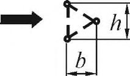
В.2Резонансное вихревое возбуждение
- В.2.1 Для однопролетных сооружений и конструктивных элементов интенсивность воздействия F ( z ), действующего при резонансном вихревом возбуждении по i -й собственной форме в направлении, перпендикулярном средней скорости ветра, определяется по формуле
где d , м, - размер сооружения или конструктивного элемента в направлении, перпендикулярном средней скорости ветра;
c y , cr - аэродинамический коэффициент поперечной силы при резонансном вихревом возбуждении;
- логарифмический декремент колебаний принимаемый равным: δ = 0,05 - для металлических сооружений; δ = 0,1 - для железобетонных сооружений; z - координата, изменяющаяся вдоль оси сооружения;
i(z) -i -я форма собственных колебаний в поперечном направлении, удовлетворяющая условию
СП 20.13330.2016
Примечание - Для высотных зданий воздействие при резонансном вихревом необходимо устанавливать на основе данных их модельных аэродинамических испытаний.
- В.2.2 Аэродинамические коэффициенты су поперечной силы определяются следующим образом:
- а) Для круглых поперечных сечений су = 0,3.
- б) Для прямоугольных поперечных сечений при b/d > 0,5:
здесь b - размер сооружения в направлении средней скорости ветра.
При b/d ≤ 0,5 расчет на резонансное вихревое возбуждение допускается не проводить.
- В.2.3 При расчете сооружения на резонансное вихревое возбуждение наряду с воздействием (В.2.1) необходимо учитывать также действие ветровой нагрузки, параллельной средней скорости ветра. Средняя wm , cr и пульсационная wр , cr составляющие этого воздействия определяются по формулам:
где Vmax расчетная скорость ветра на высоте z эк, на которой происходит резонансное вихревое возбуждение, определяемое по формуле (11.13); wm и wр - расчетные значения средней и пульсационной составляющих ветровой нагрузки, определяемые в соответствии с указаниями 11.1.
- В.2.4 Критические скорости Vcr , i могут иметь достаточно большую повторяемость в течение расчетного срока эксплуатации сооружения и, в связи с этим, резонансное вихревое возбуждение может привести к накоплению усталостных повреждений.
Для предотвращения резонансного вихревого возбуждения могут быть использованы различные конструктивные мероприятия: установка вертикальных и спиралевидных ребер, перфорация ограждения и установка соответствующим образом настроенных гасителей колебаний.
В.3Динамическая комфортность
При оценке комфортности пребывания людей в зданиях (динамическая комфортность) расчетные значения ветровой нагрузки wc принимаются равными
где wр - нормативное значение пульсационной составляющей основной ветровой нагрузки (11.1.8).
При этом максимальное ускорение этажа здания не должно превышать величины
Примечание -Для общественных и административных зданий методику оценки динамической комфортности допускается уточнять при надлежащем обосновании.
ГПриложение Г. Средняя многолетняя температура почвы на глубинах (по вытяжным термометрам), °С
Таблица Г.1
| Субъект РФ | t , ° C на глубине 0,8 м | t , ° C на глубине 0,8 м | t , °C на глубине 1,6 м | t , °C на глубине 1,6 м | t , °C на глубине 3,2 м | t , °C на глубине 3,2 м |
|---|---|---|---|---|---|---|
| Субъект РФ | t max | t min | t max | t min | t max | t min |
| Алтайский край | 18,1 | -4,8 | 14,9 | -1,3 | 10,8 | 2,5 |
| Амурская обл. | 16,5 | -8,0 | 13,3 | -4,6 | 9,3 | 0,0 |
| Архангельская обл. | 14,7 | -2,6 | 13,0 | -0,9 | 9,3 | 1,0 |
| Астраханская обл. | 26,6 | 0,6 | 23,0 | 3,9 | 15,9 | 7,6 |
| Белгородская обл. | 17,8 | 0,8 | 14,6 | 3,2 | 12,0 | 5,4 |
| Брянская обл. | 16,5 | 1,2 | 14,3 | 2,8 | 11,1 | 4,8 |
| Владимирская обл. | 16,0 | 1,0 | 13,9 | 2,1 | 11,4 | 3,7 |
| Волгоградская обл. | 24,0 | 0,2 | 21,5 | 1,8 | 18,4 | 4,4 |
| Вологодская обл. | 14,0 | 0,9 | 12,4 | 1,7 | 9,5 | 3,2 |
| Воронежская обл. | 16,8 | 1,1 | 13,9 | 3,1 | 11,1 | 5,3 |
| Еврейская а.о. | 18,9 | -3,1 | 15,5 | 0,0 | 11,0 | 1,9 |
| Забайкальский край | 14,7 | -14,3 | 10,7 | -8,3 | 6,6 | -2,3 |
| Ивановская обл. | 14,7 | 1,0 | 13,1 | 2,2 | 9,9 | 3,9 |
| Иркутская обл. | 17,0 | -8,4 | 14,9 | -4,1 | 10,8 | -1,0 |
| Кабардино-Балкарская Респ. | 21,0 | 2,9 | 18,1 | 5,8 | 14,9 | 9,1 |
| Калининградская обл. | 16,3 | 2,9 | 13,9 | 4,4 | 11,1 | 6,3 |
| Калужская обл. | 15,5 | 0,7 | 13,9 | 1,9 | 11,8 | 3,3 |
| Камчатский край | 14,1 | -0,8 | 14,5 | 0,5 | 16,7 | 1,3 |
| Карачаево-Черкесская Респ. | 15,4 | 0,0 | 13,5 | 3,4 | 11,2 | 5,8 |
| Кемеровская обл. | 14,9 | -2,0 | 12,2 | 0,2 | 8,8 | 2,4 |
| Кировская обл. | 15,5 | 0,7 | 13,8 | 1,9 | 9,2 | 3,9 |
| Костромская обл. | 15,3 | 0,9 | 13,2 | 2,0 | 10,4 | 3,6 |
| Краснодарский край | 22,9 | 3,5 | 20,7 | 6,4 | 18,4 | 9,1 |
| Красноярский край | 17,1 | -6,6 | 13,8 | -1,5 | 9,7 | 0,2 |
| Курганская обл. | 17,7 | -2,5 | 14,7 | -0,1 | 11,2 | 2,3 |
| Курская обл. | 17,4 | 0,7 | 14,9 | 2,4 | 11,5 | 4,8 |
| Ленинградская обл. | 15,5 | 0,6 | 13,8 | 1,6 | 11,4 | 3,0 |
| Липецкая обл. | 17,3 | 0,7 | 15,3 | 1,9 | 12,3 | 4,1 |
| Магаданская обл. | 9,6 | -14,6 | 6,8 | -3,8 | 2,6 | -0,8 |
| Московская обл. | 15,4 | 0,6 | 13,3 | 1,8 | 11,2 | 3,8 |
| Мурманская обл. | 12,6 | -2,5 | 10,5 | 0,2 | 7,6 | 1,0 |
| Ненецкий а.о. | 10,5 | -3,9 | 8,6 | -0,6 | 5,5 | 0,1 |
| Нижегородская обл. | 16,7 | 0,1 | 14,9 | 1,6 | 12,2 | 3,9 |
| Новгородская обл. | 14,6 | 1,1 | 12,6 | 2,3 | 10,5 | 3,7 |
| Новосибирская обл. | 15,1 | -2,3 | 12,4 | 0,3 | 8,0 | 2,7 |
| Омская обл. | 15,0 | -2,2 | 12,7 | 0,4 | 9,2 | 2,3 |
| Оренбургская обл. | 20,2 | -1,5 | 17,6 | 1,3 | 13,5 | 3,9 |
| Орловская обл. | 16,6 | 0,9 | 14,4 | 2,6 | 11,2 | 4,8 |
| Пензенская обл. | 16,2 | 0,6 | 13,6 | 2,4 | 11,4 | 4,1 |
| Пермский край | 15,7 | 0,1 | 13,7 | 1,3 | 10,5 | 2,4 |
| Приморский край | 19,3 | -2,8 | 15,9 | 0,1 | 12,0 | 2,9 |
Продолжение таблицы Г.1
| Субъект РФ | t , ° C на глубине 0,8 м | t , ° C на глубине 0,8 м | t , °C на глубине 1,6 м | t , °C на глубине 1,6 м | t , °C на глубине 3,2 м | t , °C на глубине 3,2 м |
|---|---|---|---|---|---|---|
| Субъект РФ | t max | t min | t max | t min | t max | t min |
| Псковская обл. | 17,1 | 0,8 | 14,7 | 2,4 | 11,6 | 4,0 |
| Респ. Адыгея (Адыгея) | 21,9 | 4,5 | 20,0 | 6,7 | 17,2 | 10,2 |
| Респ. Алтай | 15,2 | -8,9 | 12,3 | -7,7 | 9,8 | -3,5 |
| Респ. Башкортостан | 15,4 | 0,0 | 13,0 | 1,7 | 9,9 | 3,6 |
| Респ. Бурятия | 16,9 | -14,2 | 13,3 | -10,3 | 9,2 | -0,1 |
| Респ. Дагестан | 25,2 | 3,5 | 22,1 | 6,1 | 18,6 | 8,7 |
| Респ. Калмыкия | 23,6 | 0,7 | 20,4 | 4,1 | 16,2 | 8,3 |
| Респ. Карелия | 17,1 | 0,0 | 14,5 | 1,0 | 10,7 | 2,5 |
| Респ. Коми | 14,6 | -2,3 | 12,3 | -0,2 | 10,7 | 0,1 |
| Респ. Марий Эл | 15,7 | 0,5 | 13,1 | 2,1 | 10,4 | 3,7 |
| Респ. Саха (Якутия) | 15,0 | -18,9 | 11,5 | -16,2 | 6,8 | -12,6 |
| Респ. Северная Осетия - Алания | 23,8 | 2,8 | 21,1 | 5,4 | 16,0 | 11,2 |
| Респ. Татарстан | 15,7 | 0,2 | 13,0 | 1,7 | 9,5 | 3,9 |
| Респ. Тыва | 14,5 | -10,9 | 10,9 | -5,9 | 7,3 | -1,8 |
| Респ. Хакасия | 14,3 | -6,6 | 11,1 | -2,6 | 8,0 | 0,8 |
| Ростовская обл. | 22,8 | 0,9 | 18,6 | 3,6 | 15,8 | 6,0 |
| Рязанская обл. | 17,5 | 0,8 | 15,9 | 1,9 | 13,0 | 3,7 |
| Самарская обл. | 18,3 | -1,2 | 15,0 | 1,1 | 11,9 | 3,3 |
| Саратовская обл. | 20,1 | -1,2 | 17,3 | 1,0 | 13,1 | 3,9 |
| Сахалинская обл. | 14,5 | -1,1 | 12,2 | 0,4 | 9,3 | 3,0 |
| Свердловская обл. | 16,8 | -2,2 | 13,9 | 0,2 | 10,6 | 1,6 |
| Смоленская обл. | 15,3 | 1,4 | 13,1 | 2,8 | 10,9 | 4,5 |
| Ставропольский край | 23,8 | 3,0 | 20,7 | 4,8 | 17,1 | 8,2 |
| Таймырский (Долгано-Ненецкий) м.р. | 2,4 | -22,6 | -0,4 | -4,7 | -1,6 | -3,1 |
| Тамбовская обл. | 17,4 | 1,1 | 15,4 | 2,5 | 12,3 | 4,5 |
| Тверская обл. | 18,0 | 0,9 | 15,7 | 1,9 | 12,3 | 3,4 |
| Томская обл. | 16,5 | -1,5 | 13,5 | 0,6 | 10,0 | 2,3 |
| Тульская обл. | 15,9 | 0,8 | 13,5 | 2,5 | 11,2 | 4,2 |
| Тюменская обл. | 15,2 | -0,9 | 13,1 | 0,4 | 9,0 | 2,5 |
| Удмуртская Респ. | 16,0 | 0,4 | 13,4 | 1,5 | 9,8 | 3,5 |
| Ульяновская обл. | 15,3 | 0,8 | 12,9 | 2,4 | 10,0 | 4,6 |
| Хабаровский край | 18,9 | -10,4 | 15,5 | -6,4 | 11,8 | -1,6 |
| Ханты-Мансийский а.о. | 16,0 | -1,8 | 12,9 | 0,1 | 9,3 | 1,5 |
| Челябинская обл. | 15,2 | -1,4 | 12,5 | 0,6 | 9,6 | 2,9 |
| Чеченская Респ. | 23,2 | 3,2 | 20,0 | 6,3 | 16,8 | 10,1 |
| Чувашская Респ. | 15,6 | 0,1 | 13,0 | 1,9 | 9,4 | 3,9 |
| Чукотский а.о. | 10,0 | -14,0 | 7,4 | -12,2 | 4,7 | -10,0 |
| Эвенкийский м.р. | 12,8 | -7,6 | 10,3 | -2,9 | 6,3 | -1,2 |
| Ямало-Ненецкий а.о. | 12,5 | -3,2 | 10,2 | -1,5 | 6,8 | 1,3 |
| Ярославская обл. | 15,2 | 1,0 | 13,2 | 2,2 | 10,4 | 3,8 |
ДПриложение Д. Прогибы и перемещения
Д.1Определение прогибов и перемещений
Д.1.1 При определении прогибов и перемещений следует учитывать все основные факторы, влияющие на их значения (неупругие деформации материалов, образование трещин, учет деформированной схемы, учет смежных элементов, податливость узлов сопряжения и оснований). При достаточном обосновании отдельные факторы можно не учитывать или учитывать приближенным способом.
Д.1.2 Для конструкций из материалов, обладающих ползучестью, необходимо учитывать увеличение прогибов во времени. При ограничении прогибов исходя из физиологических требований следует учитывать только кратковременную ползучесть, проявляемую сразу после приложения нагрузки, а исходя из технологических и конструктивных (за исключением расчета с учетом ветровой нагрузки) и эстетико-психологических требований - полную ползучесть.
Д.1.3 При определении прогибов колонн одноэтажных зданий и эстакад от горизонтальных крановых нагрузок расчетную схему колонн следует принимать с учетом условий их закрепления, считая, что колонна: а) в зданиях и крытых эстакадах не имеет горизонтального смещения на уровне верхней опоры (если покрытие не создает жесткого в горизонтальной плоскости диска, следует учитывать горизонтальную податливость этой опоры); б) в открытых эстакадах рассматривается как консоль.
Д.1.4 При колебаниях строительных конструкций зданий и сооружений классификацию вибраций, нормируемые параметры, их предельно допустимые значения в жилых, общественных и производственных зданиях необходимо устанавливать согласно требованиям соответствующих действующих нормативных документов.
При наличии высокоточного оборудования и приборов, чувствительных к колебаниям конструкций, на которых они установлены, предельные значения виброперемещений, виброскорости, виброускорения следует определять в соответствии с заданием на проектирование.
Д.1.5 Расчетные ситуации, для которых необходимо определять прогибы и перемещения и соответствующие им нагрузки, следует принимать в зависимости от того, исходя из каких требований производится расчет.
Расчетная ситуация характеризуется расчетной схемой конструкции, видами нагрузок, значениями коэффициентов условий работы и коэффициентов надежности, перечнем предельных состояний, которые следует рассматривать в данной ситуации.
Если расчет производится исходя из технологических требований, расчетная ситуация должна соответствовать действию нагрузок, влияющих на работу технологического оборудования.
Если расчет производится исходя из конструктивных требований, расчетная ситуация должна соответствовать действию нагрузок, которые могут привести к повреждению смежных элементов в результате значительных прогибов и перемещений.
Если расчет производится исходя из физиологических требований, расчетная ситуация должна соответствовать состоянию, связанному с колебаниями конструкций, и при этом необходимо учитывать нагрузки, влияющие на колебания конструкций, ограничиваемые требованиями настоящего свода правил.
Если расчет производится исходя из эстетико-психологических требований, расчетная ситуация должна соответствовать действию постоянных и длительных нагрузок.
Для конструкций покрытий и перекрытий, проектируемых со строительным подъемом при ограничении прогиба эстетико-психологическими требованиями, определяемый вертикальный прогиб следует уменьшать на размер строительного подъема.
СП 20.13330.2016
Д.1.6 Прогиб элементов покрытий и перекрытий, ограниченный исходя из конструктивных требований, не должен превышать расстояния (зазора) между нижней поверхностью этих элементов и верхом перегородок, витражей, оконных и дверных коробок и других конструктивных элементов, расположенных под несущими элементами.
Зазор между нижней поверхностью элементов покрытий и перекрытий и верхом перегородок, расположенных под элементами, как правило, не должен превышать 40 мм. В тех случаях, когда выполнение указанных требований связано с увеличением жесткости покрытий и перекрытий, необходимо конструктивными мероприятиями избегать этого увеличения (например, размещением перегородок не под изгибаемыми балками, а рядом с ними).
Д.1.7 При наличии между стенами капитальных перегородок (практически такой же высоты, как и стены) значения l в поз. 2, а таблицы Д.1 следует принимать равными расстояниям между внутренними поверхностями несущих стен (или колонн) и этими перегородками (или между внутренними поверхностями перегородок, рисунок Д.1).
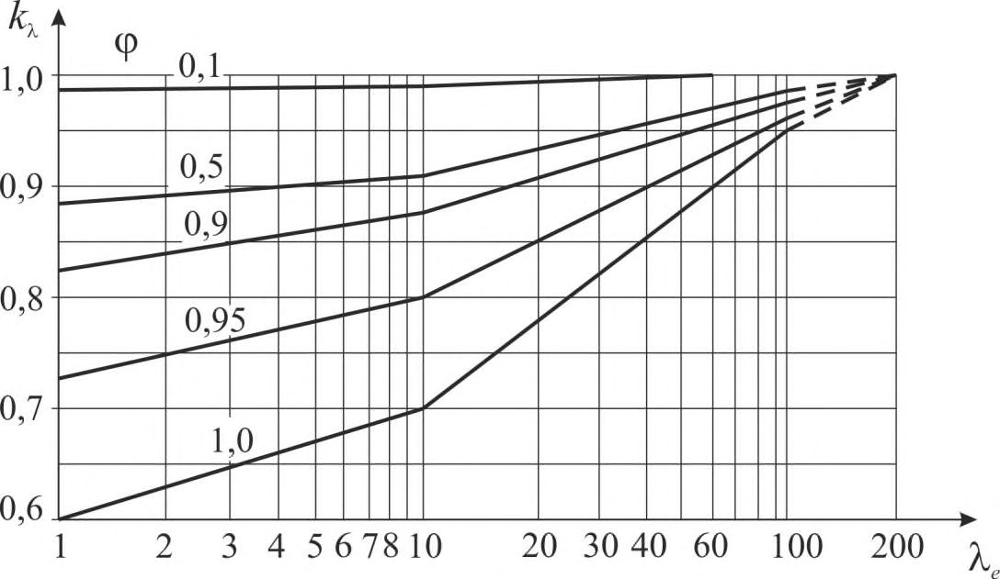
а - одной в пролете; б - двух в пролете; 1 - несущие стены (или колонны); 2 - капитальные перегородки; 3 - перекрытие (покрытие) до приложения нагрузки; 4 - перекрытие (покрытие) после приложения нагрузки; 5 - линии отсчета прогибов; 6 - зазор
Рисунок Д.1 - Схемы для определения значений l ( l 1, l 2, l 3) при наличии между стенами капитальных перегородок
Д.1.8 Прогибы стропильных конструкций при наличии подвесных крановых путей (см. таблицу Д.1, позиция 2, г ) следует принимать как разность между прогибами f 1 и f 2 смежных стропильных конструкций (рисунок Д.2).
Д.1.9 Горизонтальные перемещения каркаса следует определять в плоскости стен и перегородок, целостность которых должна быть обеспечена.
При связевых каркасах многоэтажных зданий высотой более 40 м перекос этажных ячеек, примыкающих к диафрагмам жесткости, равный f 1/ hs + f 2 /l (рисунок Д.3), не должен превышать (см. таблицу Д.4): 1/300 для позиции 2, 1/500 - для позиции 2, а и 1/700 - для позиции 2, б .
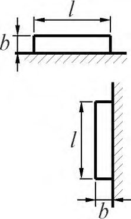
1 - стропильные конструкции; 2 - балка подвесного кранового пути; 3 - подвесной кран; 4 - исходное положение стропильных конструкций; f 1 - прогиб наиболее нагруженной стропильной конструкции; f 2 -прогибы смежных с наиболее нагруженной стропильных конструкций
Рисунок Д.2 - Схема для определения прогибов стропильных конструкций при наличии подвесных крановых путей
Рисунок Д.3 - Схема перекоса этажных ячеек 2, примыкающих к диафрагмам жесткости 1 в зданиях со связевым каркасом (пунктиром показана исходная схема каркаса до приложения нагрузки)
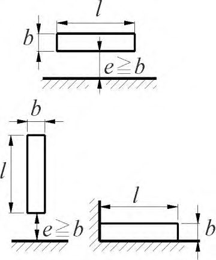
Д.2Предельные прогибы
Д.2.1 Вертикальные предельные прогибы элементов конструкций
Вертикальные предельные прогибы элементов конструкций и нагрузки, от которых следует определять прогибы, приведены в таблице Д.1. Требования к зазорам между смежными элементами приведены в Д.1.6 приложения Д.1.
Таблица Д.1
| Элементы конструкций | Предъявляемые требо- вания | Вертикальные пре- дельные прогибы f u | Нагрузки для определения вертикальных прогибов |
|---|---|---|---|
| 1 Балки крановых путей подмо- стовые и подвесные краны, управляемые: с пола, в том числе тельферы (та- ли) из кабины при группах работы: | Технологические | l /250 | От одного крана |
| режимов 1К-6К | Физиологические и технологические | l /400 | То же |
| 7К | l /500 | » | |
| 8К | l /600 | » | |
| 2 Балки, фермы, ригели, прогоны, плиты, настилы (включая попе- речные ребра плит и настилов): а) покрытий и перекрытий, открытых для обзора, при пролете l , м: l 1 | Эстетико- психологические | l /120 | Постоянные и длительные |
| 3 | |||
| l = | l /150 | ||
| l = 6 | l /200 | ||
| l = 24 (12) | l /250 | ||
| l 36 (24) | l /300 |
СП 20.13330.2016
Продолжение таблицы Д.1
| Элементы конструкций | Предъявляемые требо- вания | Вертикальные пре- дельные прогибы f u | Нагрузки для определения вертикальных прогибов |
|---|---|---|---|
| б) покрытий и перекрытий при наличии перегородок под ними | Конструктивные | Принимаются в со- ответствии с прило- жением Д.1 | Приводящие к уменьше- нию зазора между несу- щими элементами кон- струкций и перегородка- ми, расположенными под элементами |
| в) покрытий и перекрытий при наличии тельферов (та- лей), подвесных кранов, управляемых: | |||
| с пола | Технологические | l /300 или а /150 (меньшее из двух) | Кратковременные с уче- том нагрузки от одного крана или тельфера (та- ли) на одном пути |
| из кабины | Физиологические | l /400 или а /200 (меньшее из двух) | От одного крана или тельфера (тали) на одном пути |
| г) перекрытий, подверженных действию: перемещаемых грузов, ма- териалов, узлов и элемен- тов оборудования и других подвижных нагрузок (в том числе при безрельсовом напольном транспорте) нагрузок от рельсового | Физиологические и технологические | l /350 | Наиболее неблагоприят- ное из следующих двух значений: 0,7 полных нормативных значений кратковремен- ных нагрузок на пере- крытие или нагрузки от одного транспортного средства |
| транспорта: | |||
| узкоколейного | l /400 | От одного состава ваго- нов (или одной наполь- ной машины) на одном пути | |
| ширококолейного | l /500 | То же | |
| д) покрытий и перекрытий автостоянок в зданиях, при пролете l , м: | Физиологические и технологические | Постоянные и длитель- ные |
Окончание таблицы Д.1
| Элементы конструкций | Предъявляемые требо- вания | Вертикальные пре- дельные прогибы f u | Нагрузки для определения вертикальных прогибов |
|---|---|---|---|
| l = 6 | l/200 | ||
| l = 12 | l/250 | ||
| l 24 | l/300 | ||
| 3 Элементы лестниц (марши, площадки, косоуры), балконов, лоджий | Эстетико- психологические | Те же, что в позиции 2, а | Те же, что в позиции 2, а |
| 3 Элементы лестниц (марши, площадки, косоуры), балконов, лоджий | Физиологические | Определяются в соответствии с Д.2.2 | Определяются в соответствии с Д.2.2 |
| 4 Плиты перекрытий, лестничные марши и площадки, прогибу ко- торых не препятствуют смежные элементы | То же | 0,7 мм | Сосредоточенная нагруз- ка 1 кН в середине про- лета |
| 5 Перемычки и навесные стено- вые панели над оконными и двер- ными проемами (ригели и прого- ны остекления) | Конструктивные | l /200 | Приводящие к уменьше- нию зазора между несу- щими элементами и оконным или дверным заполнением, располо- женным под элементами |
| 5 Перемычки и навесные стено- вые панели над оконными и двер- ными проемами (ригели и прого- ны остекления) | Эстетико- психологические | Те же, что в позиции 2, а | Те же, что в позиции 2, а |
Обозначения, принятые в таблице Д.1:
- l - расчетный пролет элемента конструкции;
- а - шаг балок или ферм, к которым крепятся подвесные крановые пути.
Примечания
- 1 Для консоли вместо l следует принимать удвоенный ее вылет.
- 2 Для промежуточных значений l в позиции 2,а предельные прогибы следует определять линейной интерполяцией, учитывая требования Д.1.7 приложения Д.
- 3 В позиции 2,а цифры, указанные в скобках, следует принимать при высоте помещений до 6 м включительно.
- 4 Особенности вычисления прогибов по позиции 2,г указаны в Д.1.8 приложения Д.
- 5 При ограничении прогибов эстетико-психологическими требованиями допускается пролет l принимать равным расстоянию между внутренними поверхностями несущих стен (или колонн).
Д.2.2 Предельные прогибы (физиологические)
Предельные прогибы элементов перекрытий (балок, ригелей, плит), лестниц, балконов, лоджий, помещений жилых и общественных зданий, а также бытовых помещений производственных зданий исходя из физиологических требований следует определять по формуле
где g - ускорение свободного падения;
- р - нормативное значение нагрузки от людей, возбуждающих колебания, принимаемое по таблице Д.2;
- р 1 - пониженное нормативное значение нагрузки на перекрытия, принимаемое по таблице Д.2;
- q - нормативное значение нагрузки от веса рассчитываемого элемента и опирающихся на него конструкций;
- п - частота приложения нагрузки при ходьбе человека, принимаемая по таблице Д.2;
- b - коэффициент, принимаемый по таблице Д.2.
СП 20.13330.2016 Таблица Д.2
| Помещения, принимаемые по таблице 8.3 | p , кПа | p 1 , кПа | n , Гц | b |
|---|---|---|---|---|
| Позиции 1, 2, кроме классных и бытовых Позиции 3, 4, а , 9, б , 10, б | 0,25 | Принимается по 8.2.3 | 1,5 | pal Q 125 |
| Позиция 2 - классные и бытовые Позиции 4, б-г , кроме танцеваль- ных Позиции 9, а , 10, а , 12, 13 | 0,5 | То же | 1,5 | pal Q 125 |
| Позиция 4 - танцевальные Позиции 6, 7 | 1,5 | 0,2 | 2,0 | 50 |
Обозначения, принятые в таблице Д.2:
Q - вес одного человека, принимаемый равным 0,8 кН;
- коэффициент, принимаемый равным 1,0 для элементов, рассчитываемых по балочной схеме, 0,5 - в остальных случаях (например, при опирании плит по трем или четырем сторонам); а - шаг балок, ригелей, ширина плит (настилов), м; l - расчетный пролет элемента конструкции, м.
Прогибы следует определять от суммы нагрузок 1 p + р 1 + q , где 1 - коэффициент, определяемый по формуле (8.1).
Д.2.3 Горизонтальные предельные прогибы колонн и тормозных конструкций от крановых нагрузок
Д.2.3.1 Горизонтальные предельные прогибы колонн зданий, оборудованных мостовыми кранами, крановых эстакад, а также балок крановых путей и тормозных конструкций (балок или ферм), следует принимать по таблице Д.3, но не менее 6 мм.
Прогибы следует проверять на отметке головки крановых рельсов от сил торможения тележки одного крана, направленных поперек кранового пути, без учета крена фундаментов.
Таблица Д.3
| Предельные прогибы f u | Предельные прогибы f u | Предельные прогибы f u | |
|---|---|---|---|
| Группы режимов рабо- ты кранов | колонн | колонн | балок крановых путей и тормозных конструкций, и крановых эстакад (крытых и открытых) |
| Группы режимов рабо- ты кранов | зданий и крытых крановых эстакад | открытых крановых эстакад | зданий |
| 1К-3К | h /500 | h /1500 | l /500 |
| 4К-6К | h /1000 | h /2000 | l /1000 |
| 7К-8К | h /2000 | h /2500 | l /2000 |
Обозначения, принятые в таблице Д.3: h - высота от верха фундамента до головки кранового рельса (для одноэтажных зданий, крытых и открытых крановых эстакад) или расстояние от оси ригеля перекрытия до головки кранового рельса (для верхних этажей многоэтажных зданий); l - расчетный пролет элемента конструкции (балки).
Д.2.3.2 Горизонтальные предельные сближения крановых путей открытых эстакад от горизонтальных и внецентренно приложенных вертикальных нагрузок от одного крана (без учета крена фундаментов), ограничиваемые исходя из технологических требований, следует принимать равными 20 мм.
Д.2.4 Горизонтальные предельные перемещения и прогибы зданий, отдельных элементов конструкций и опор конвейерных галерей от ветровой нагрузки, крена фундаментов и температурных климатических воздействий
Д.2.4.1 Горизонтальные предельные перемещения зданий, ограничиваемые исходя из конструктивных требований (обеспечение целостности заполнения каркаса стенами, перегородками, оконными и дверными элементами), приведены в таблице Д.4. Указания по определению перемещений приведены в Д.1.9 приложения Д.
Горизонтальные перемещения зданий следует определять с учетом крена (неравномерных осадок) фундаментов. При этом нагрузки от веса оборудования, мебели, людей, складируемых материалов и изделий следует учитывать только при сплошном равномерном загружении всех перекрытий многоэтажных зданий этими нагрузками (с учетом их снижения в зависимости от числа этажей), за исключением случаев, при которых по условиям нормальной эксплуатации предусматривается иное загружение.
Для зданий высотой до 40 м (и опор конвейерных галерей любой высоты), расположенных в ветровых районах I-IV, крен фундаментов, вызываемый ветровой нагрузкой, допускается не учитывать.
Таблица Д.4
| Здания, стены и перегородки | Крепление стен и перегородок к каркасу здания | Предельные перемеще- ния f u |
|---|---|---|
| 1 Многоэтажные здания | Любое | h /500 |
| 2 Один этаж многоэтажных зданий: | Податливое | h s /300 |
| а) стены и перегородки из кирпича, гипсобетона, железобетонных панелей | Жесткое | h s /500 |
| б) стены, облицованные естественным камнем, из керамических блоков | » | h s /700 |
| 3 Одноэтажные здания (с самонесущими стенами) высотой этажа h s , м: | ||
| h s 6 | Податливое | h s /150 |
| h s = 15 | h s /200 | |
| h s 30 | h s /300 |
Обозначения, принятые в таблице Д.4:
- h - высота многоэтажных зданий, равная расстоянию от верха фундамента до оси ригеля покрытия;
- hs - высота этажа в одноэтажных зданиях, равная расстоянию от верха фундамента до низа стропильных конструкций; в многоэтажных зданиях: для нижнего этажа - равная расстоянию от верха фундамента до оси ригеля перекрытия; для остальных этажей - равная расстоянию между осями смежных ригелей.
Примечания
- 1 Для промежуточных значений hs (по позиции 3) горизонтальные предельные перемещения следует определять линейной интерполяцией.
- 2 Для верхних этажей многоэтажных зданий, проектируемых с использованием элементов покрытий одноэтажных зданий, горизонтальные предельные перемещения следует принимать такими же, как и для одноэтажных зданий. При этом высота верхнего этажа hs принимается от оси ригеля междуэтажного перекрытая до низа стропильных конструкций.
- 3 К податливым креплениям относятся крепления стен или перегородок к каркасу, не препятствующие смещению каркаса (без передачи на стены или перегородки усилий, способных вызвать повреждения конструктивных элементов); к жестким - крепления, препятствующие взаимным смещениям каркаса, стен или перегородок.
- 4 Для одноэтажных зданий с навесными стенами (а также при отсутствии жесткого диска покрытия) и многоэтажных этажерок предельные перемещения допускается увеличивать на 30 % (но принимать не более hs /150).
- Д.2.4.2 Для 2-го предельного состояния горизонтальные перемещения бескаркасных зданий от ветровых нагрузок не ограничиваются.
- Д.2.4.3 Горизонтальные предельные прогибы стоек и ригелей фахверка, а также навесных стеновых панелей от ветровой нагрузки, ограничиваемые исходя из конструктивных требований, следует принимать равными l /200, где l - расчетный пролет стоек или панелей.
СП 20.13330.2016
Д.2.4.4 Горизонтальные предельные прогибы опор конвейерных галерей от ветровых нагрузок, ограничиваемые исходя из технологических требований, следует принимать равными h /250, где h - высота опор от верха фундамента до низа ферм или балок.
Д.2.4.5 Горизонтальные предельные прогибы колонн (стоек) каркасных зданий от температурных климатических и усадочных воздействии следует принимать равными: hs /150 - при стенах и перегородках из кирпича, гипсобетона, железобетона и навесных панелей; hs /200 - при стенах, облицованных естественным камнем, из керамических блоков, из стекла (витражи), где hs - высота этажа, а для одноэтажных зданий с мостовыми кранами - высота от верха фундамента до низа балок кранового пути.
При этом температурные воздействия следует принимать без учета суточных колебаний температур наружного воздуха и перепада температур от солнечной радиации.
При определении горизонтальных прогибов от температурных климатических и усадочных воздействий их значения не следует суммировать с прогибами от ветровых нагрузок и от крена фундаментов.
Д.2.5 Предельные выгибы элементов междуэтажных перекрытий от усилий предварительного обжатия
Предельные выгибы fu элементов междуэтажных перекрытий, ограничиваемые исходя из конструктивных требований, следует принимать равными 15 мм при l 3 м и 40 мм - при l 12 м (для промежуточных значений l предельные выгибы следует определять линейной интерполяцией).
Выгибы f следует определять от усилий предварительного обжатия, собственного веса элементов перекрытий и веса пола.
ЕПриложение Е. Карты районирования территории Российской Федерации по климатическим характеристикам
(Издано отдельной брошюрой)
Библиография
- [1] Федеральный закон от 29 декабря 2004 г. № 190-ФЗ «Градостроительный кодекс Российской Федерации»